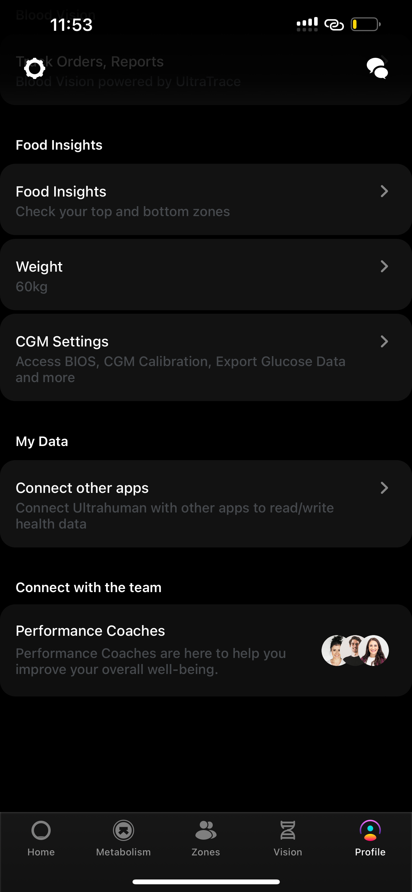

Ultrahuman is primarily a health-monitoring platform, using data points from wearables and services like the Ultrahuman Ring, M1 Continuous Glucose Monitor, Ultrahuman Home Health Monitor, and blood testing services (Blood Vision).
Ultrahuman used to be a digital platform with a subscription model for digital content across health, fitness, sleep, and wellness (this is how we started).
However, today, Ultrahuman has expanded to design, manufacture and sell wearables and services for health optimisation. (always the primary mission)
The comprehensive suite of products offered by Ultrahuman is listed below: - Ultrahuman Ring Air - Ultrahuman CGM - Ultrahuman Home - Blood Vision
The Ultrahuman Ring AIR combines minimalism with comfort, featuring a sleek, notchless, ultra-thin design. At just 2.4 grams, it's the lightest smart ring* available, making it perfect for all-day wear and sleep tracking. The smooth inner shell provides a snug, unobtrusive fit—far more comfortable than bulky fitness devices—allowing continuous monitoring of vital health indicators.
Engineered for precision, the Ultrahuman Ring AIR tracks essential health metrics including sleep, movement, heart rate (HR), heart rate variability (HRV), and skin temperature. As part of Ultrahuman's holistic fitness platform, this smart ring provides deep insights into metabolic health. When paired with our flagship Ultrahuman M1, it reveals powerful correlations between movement, HRV, heart rate, and sleep, enabling a personalized approach to optimizing your metabolic health.
Contents of the Ultrahuman Ring AIR box
Ultrahuman Ring AIR
Wireless charger
USB-C cable
User Manual
Getting Started Guide
How to charge your Ring AIR
💡 Key features
Near-weightlessness: The Ultrahuman Ring AIR is 11X lighter and significantly sleeker than most smartwatches out on the market today, with the smallest Ultrahuman Ring AIR being as light as 2.4 grams.
Robust Titanium: The Ultrahuman Ring AIR, is specifically crafted to withstand demanding usage conditions. Constructed with a Titanium body and coated in Tungsten carbide, renowned for its exceptional hardness, this ring offers remarkable durability.
Water Resistant: The Ultrahuman Ring AIR is water resistant up to 100m.You can wear it while swimming, showering, and even scuba diving. We don't recommend keeping the ring submerged underwater for more than 30 minutes. Please note this water resistance is higher than the max Ingress protection (IPX9) rating that any consumer electronic product could be rated.
Dimensions:
Width: 8.1mm
Thickness range: 2.5-2.55mm
Weight: 2.4 grams - 3.6 grams
Here's a dimension chart of the ring across all available sizes for your reference.
The Ultrahuman Ring AIR is available in 6 colours; Matte Grey, Aster Black, Space Silver, Bionic Gold, Raw Titanium and Brushed Rose Gold Ring.
More Information
Ultrahuman Ring Air empowers users with deep insights derived from metrics such as movement data, HRV, Heart Rate and Sleep Data. These metrics, when combined with our existing ecosystem of products such as Ultrahuman M1 can provide proactive correlations to take your metabolic health to the next level! (see below)
The Ultrahuman Ring is designed to help you understand the factors that affect your metabolism. With the ring you can:
Understand your activity patterns throughout the day with the Movement Index - based on metabolic equivalents (METs). It counts calories, steps etc.
Decode your sleep health with the Sleep Index and understand how your sleep quality affects your metabolism.
Comprehend body metrics like stress using the Body Index - based on your heart rate, HRV and body temperature.
Product Overview
The all-new Ultrahuman Ring is our next big step towards decoding metabolic health and bringing personalized data-driven insights into everyone’s reach.
The Thought & Design behind the ring
After Ultrahuman M1, we wanted to create a wearable device that tracks your metabolic health in further detail using the next set of crucial biomarkers -but with a focus on convenience right from the beginning. So, we designed the Ultrahuman Ring to subtly sit on your body and keep monitoring your biosignals without you even noticing. You simply wear it and forget it, the ring takes care of everything else. We set aside all the bells and whistles and crafted a clean experience that doesn’t intrude in your daily life. There are no screens or vibrations for constant notifications, we give you the control to check your details whenever you like on the app.
The Ultrahuman Ring is crafted to become a part of you. You become a Cyborg, inconspicuously.
What does the ring do?
The Ultrahuman Ring is designed to help you understand the factors that affect your metabolism. These factors include sleep quality, movement and body metrics like HRV Heart Rate and Temperature
Biomarkers for You.
To make it easy for you to decode your metabolic health, we give you three different scores for each aspect of your health. These scores help you understand how to optimize your sleep, activity and recovery in a truly personal way.
You can understand your activity patterns throughout the day with the Movement Index - based on metabolic equivalents (METs). A MET is a ratio of your working metabolic rate relative to your resting metabolic rate. Metabolic rate is the rate of energy expended per unit of time. It’s a way to describe the intensity of an exercise or activity. So one MET would be the energy you spend at rest. In these terms, an activity like brisk walking would be around 4 METs. Using this information, you are nudged to get moving throughout the day to improve your score as we recommend activities tailored to you
that allow you to get the biggest gains with the least effort.
The Sleep Index:
💤
The Sleep Index allows you to decode your sleep quality and see a breakdown of your sleep stages throughout the night. Poor sleep quality affects your metabolic health and poor metabolic health affects your sleep quality creating a feedback loop. The Ultrahuman ring lets you derive correlations between how your sleep stages like REM/NREM affect your metabolism and vice-versa, thus becoming your key to unlock the mysteries of a good night sleep and a well rested heart.
The Recovery Index/ Dynamic Recovery:
🧘♀️
The Ring AIR’s Dynamic Recovery is an aggregate measure of five parameters determining your body’s preparedness for the next day and changes throughout the day. It is a percentage measure from 0-100, a higher (85 or above) number indicating better recovery.
The Dynamic Recovery has six factors which include – Sleep index, skin temperature, stress rhythm score, resting heart rate, HRV form and Last night HRV.
Dynamic Recovery is dynamic and can be improved throughout the day by regulating stress, maintaining good sleep and sleep hygiene, proper exercise routine, eating balanced and timely meals, hydrating well and including cold therapy and active recovery.
The Ultra-Verse (The Ecosystem)
The Ultrahuman Ring fits right into our existing ecosystem of products like the Ultrahuman M1. This means glucose data from the M1 in convergence with sleep, movement and body data provides deep correlations to actively improve your metabolic health.
With movement and glucose data, you can expect predictive insights based on your glucose patterns. For instance, eating a slice of Pizza in the past gave you a glucose spike, the next time you log a slice of Pizza, it’ll recommend you to achieve personalized movement goals in order to cut the spike.
With sleep and glucose data, it's possible to see in real-time, what happens to HRV with sleep and how glucose levels are affected. For instance, glucose spikes were much higher than usual for the same food in the past due to poor sleep. The Ultrahuman Ring can provide input on poor sleep and use M1's insight of higher than normal glucose spikes to provide cohesive input of your health, painting a more complete picture of the state of your body.
With HRV and glucose data, you can get real-time updates on your stress levels or recovery based on your HRV. Now paired with glucose data, you will also understand deeper correlations between stress and stress-induced glucose spikes.
What is the ring made of?
The Ultrahuman is designed to be tough on the outside and comfortable on the inside. The ring is crafted using:
A Titanium alloy billet for the body.
A Super durable Tungsten Carbide coating which is 5 times harder than Tool Steel making it remarkably scratch-resistant and ready to take on everyday wear and tear.
Medical grade transparent material on the insides that have been tested safe to be used even for implanting inside the human body.
The ring is designed hypoallergenic and can be worn for multiple days without causing any harm to the skin.
The inside shape of the ring has multiple sections for each sensor protruding towards your finger, separated by a streamlined design with filleted edges to enable the sensors to take accurate readings while still keeping the Ultrahuman Ring comfortable enough to wear for weeks on end.
Physical Dimensions
The physical width of the Ring is 8.2mm with a 3mm thickness.
The diameter and weight of the Ring depend upon the size. It ranges from 16mm in diameter and 4.4g of weight for size 5 to 24.91mm in diameter and 3.7g of weight for size 14.
Here's a dimension chart of the ring across all available sizes for your reference.
Other Characteristics
🔋
The battery ideally lasts from 4-6 days depending upon the usage. However, we are continuously working on optimizing the battery life of the Ultrahuman Ring with regular firmware updates to provide you with a longer-lasting experience. The battery life of 3.5 to 4 days is influenced by several factors, including ambient temperature, frequency of use, and individual usage patterns. When we advertise up to 6 days of battery life, we consider optimal conditions where the ring is worn continuously and the ambient temperature is ideal. We understand your expectations and are continuously working to optimise the ring's performance under various conditions.
⚡
It takes around 180 mins to fully charge the battery.
📜
We recommend syncing your ring at least once every 24 hours to ensure all your biosignals are safely transferred to the app and to prevent any potential loss of data.
📱
The ring is compatible with Android devices running on Android 6 and above. On iOS, it’s 15 and above
Battery Health Wizard
Goal: Maximize user adoption of the in-app Troubleshooting WizardCheck for an Automatic Trigger of the Wizard:Verify if the app has already prompted the user to run the Troubleshooting Wizard. This information should be visible in the chat (images attached)Scenario 1: If the App Triggered the Wizard
Obtain the user’s logged-in email ID.
Access the Troubleshooting Dashboard → Navigate to Troubleshoot Wizard Sessions.
Filter by the email ID and check the latest session status (ensure it was recorded on the same day the user reached out).
Next Steps Based on Session Status:
In Progress → Ask the user to resume using the link and complete the flow: Link
Terminated → Ask the user to retry the Wizard and follow the steps as prompted: Link
Completed → Run checks on the dashboard and follow the Battery SOP.
Scenario 2. If the Wizard Wasn’t Prompted
Open the Troubleshooting Dashboard → Go to Troubleshoot Wizard Sessions.
Check for any latest sessions ( The session needs to be recorded on the same day the user reached out)
If no latest session is found → Ask the user to try the Troubleshooting Wizard and follow the steps as prompted.
If there is a record of the latest session: Follow Steps as part of Scenario 1 (mentioned above)
Important Side Note: Factory reset is not part of the Wizard flow as of now. So in cases where status is "Terminated" and "In progress" and we are sharing the Wizard link- we can let the users know that post the new firmware upgrade they should perform a reset and observe for few charge cycles.
In addition to this, we've now also added the battery troubleshooting wizard history for each user (per day) on the TS dashboard for your convenience.You’ll also find an app deeplink there, which you can share with users to help them directly initiate the Battery Health Troubleshooting flow.
Head to the user’s profile on the Battery TS dashboard.
You’ll see the Wizard troubleshooting history and a shareable deeplink in the section.
What is the ring made of? The Ultrahuman ring is made of an incredibly strong Titanium body and coated with a scratch-resistant Tungsten Carbide layer. The ring is hypoallergenic, with the insides made of medical-grade transparent materials —tough on the outside, comfortable on the inside.
💡
The Ultrahuman Ring plugs into Ultrahuman’s premium content created with world-class coaches, psychologists and experts. This means we can suggest one of our workout programs that would be just perfect for you to improve your Movement Index, or something from our Sleep Series to better your Sleep Index. We can suggest one of our meditation programs based on your stress levels, Body Index and so on. We don’t just give you metrics, we also provide you with world-class tools to improve your health holistically.
📶
The ring connects to your device via Bluetooth and transfers your biosignals to the Ultrahuman App when you open the app and sync the ring. We recommend syncing your ring at least once every 24 hours to ensure all biosignals are safely transferred and to prevent potential data loss. On iOS, the ring syncs automatically as soon as you open the Ultrahuman App. On Android, open the Ultrahuman App and manually initiate a sync to transfer the data.
🔋
How does the ring charge? The ring charges with the custom charger included in the box. It takes approx 180 minutes to charge. You can expect around 3.5-4 days of battery life on a fully charged ring
💰
How much does it cost? You can visit the Ultrahuman Ring page to see up-to-date pricing
👥
You’ll also get access to a team of certified performance coaches who can help you interpret your data better and give recommendations. Grab the opportunity to biohack your health and optimize it!
Open the app >> ring tab >> scroll down >> you'll see an option called "Talk science with a friend" >> click on that. You'll be able to invite your friends and family members to become Cyborgs! :)
App Walkthrough and Metrics
App Walk-Through 🚀
Welcome to the Ultrahuman App Walk-Through—your personal tour guide to mastering the app like a pro! Whether you're a first-time user or looking to unlock hidden features, this section will walk you through every essential aspect of the app, ensuring you make the most of your Ultra Human experience.
This walk-through is designed to help you:
✅ Navigate with Confidence 🗺️ – Understand every feature, setting, and hidden gem within the app.
✅ Personalize Your Experience 🎛️ – Learn how to customize your settings based on your lifestyle and goals.
✅ Optimize Health Tracking 💪 – Ensure you’re getting the most accurate data from your Ultra Human ring.
✅ Stay Up-to-Date 🔄 – Be aware of new features, updates, and best practices.
✅ Save Time & Avoid Confusion ⏳❌ – No more endless searching—everything you need is right here!
So, buckle up, explore, and get ready to supercharge your Ultrahuman journey! ⚡💍
Let’s dive in! 🚀
Main App Screen
Home Screen Navigation
The main dashboard with intuitive UI elements for easy navigation.
Quick Access Menu
A set of shortcut icons for frequently used features.
Real-time Data Display
Live updates or statistics being shown dynamically.
User Profile
Options to manage user preferences, settings, and account details in the profile section.
Interactive Elements (Buttons, Cards, etc.)
Tapable buttons and interactive cards providing access to features.
Your Resting Heart Rate (RHR) is the number of times your heart beats per minute while at rest. It’s a key indicator of your heart health, fitness, and recovery.
💡 Why It’s Important:
A lower RHR usually means a stronger, more efficient heart that pumps blood with fewer beats.
Tracking RHR helps you understand your fitness progress and overall well-being.
It can be influenced by age, activity level, and genetics.
🔍 How It’s Measured:
Your RHR is best tracked while you sleep, when your body is fully at rest. This gives the most accurate picture of your heart’s baseline function. Monitoring it regularly can help you spot trends, improve recovery, and optimize health. 💙
Heart Rate Variability (HRV)
Your Heart Rate Variability (HRV) measures the small variations in time between each heartbeat. It’s a key indicator of your body’s ability to handle stress, recover, and maintain balance.
💡 Why It Matters:
A higher HRV usually means a more adaptable and resilient nervous system, helping you recover better.
HRV reflects the balance between your ‘fight or flight’ (sympathetic) and ‘rest and digest’ (parasympathetic) nervous systems.
Tracking HRV can help you understand stress levels, optimize recovery, and improve overall well-being.
🔍 How It Changes:
After intense exercise, HRV may temporarily drop due to physical stress, but this is part of your body’s natural adaptation. Over time, consistent exercise can improve your HRV baseline, making your body more resilient to stress and better at recovery.
Monitoring HRV regularly can help you fine-tune your workouts, stress management, and lifestyle choices for better long-term health. 🚀
Skin Temperature and deviation
🌡️ Skin Temperature: A Window into Your Health
Your Skin Temperature is an important indicator of how your body responds to changes in your environment, metabolism, and overall health.
💡 Why It Matters:
Skin temperature can fluctuate due to ambient temperature, circadian rhythms, metabolism, or even stress and illness.
Sudden changes may signal your body fighting infection, inflammation, or other physiological shifts.
Tracking these variations can help you stay proactive about your well-being.
🔍 How It’s Measured:
A finger-based sensor detects skin temperature trends, but it differs from core body temperature (like a thermometer reading) since it’s influenced by blood flow and external conditions.
📊 Temperature Deviation & Your Baseline:
The Temperature Deviation factor shows how much your skin temperature deviates from your baseline. This is a key indicator of your body’s natural balance and is displayed directly on your home screen for easy tracking.
By consistently monitoring your skin temperature and its deviation, you can spot patterns, detect potential health concerns early, and optimize your recovery. 🚀
VO2 MAX
🫁 VO2 Max: The Ultimate Measure of Aerobic Fitness
VO2 Max, or maximal oxygen consumption, represents the highest rate at which your body can use oxygen during exercise. It is measured in milliliters of oxygen per minute per kilogram of body weight (mL/kg/min).
💡 Why It Matters:
Best indicator of cardiovascular fitness & endurance 💪
Reflects how efficiently your body delivers and utilizes oxygen 🔥
Higher VO2 Max = Better stamina & athletic performance 🏃♂️
Tracking VO2 Max helps you understand your fitness level, optimize training, and improve overall endurance! 🚀
Sleep Index
The Ultrahuman Ring AIR boasts a sleek, ultra-light design that pairs seamlessly with advanced sleep-tracking algorithms, ensuring you rest with ease.
Its Sleep Index provides deep insights into different sleep stages—Deep Sleep, REM, Light Sleep, and Wakefulness—each playing a vital role in your body’s growth, repair, and restoration.
By understanding the science of sleep, you gain the power to make informed decisions for better rest and overall well-being. Embrace the insights from the Sleep Index to nurture a mindful sleep routine, unlocking renewed energy, recovery, and balance every night.
Workout mode
Optimize Your Workouts with Ultrahuman Ring AIR’s Workout Mode!
The Ultrahuman Ring AIR features a dedicated Workout Mode, enabling precise heart rate tracking during active workouts. This real-time monitoring helps you:
✅ Track Heart Rate & Zones – Gain insights into your cardiovascular performance as your workout is segmented into five heart rate zones:
🔵 Zone 1 – Light activity (<132 BPM)
🟢 Zone 2 – Moderate intensity (132-142 BPM)
🟡 Zone 3 – Endurance-building (142-159 BPM)
🟠 Zone 4 – High-intensity effort (158-179 BPM)
🔴 Zone 5 – Maximum exertion (>179 BPM)
Tracking these zones helps you fine-tune your training, optimize endurance, and push your limits effectively.
✅ Monitor Calories Burned – Get real-time insights into your energy expenditure, helping you optimize workouts for better fitness outcomes.
✅ Heart Rate Recovery – Assess how quickly your heart rate returns to baseline post-workout, a key indicator of cardiovascular fitness & recovery efficiency.
⚠️ Note: Workouts can be automatically detected by your ring. However, to ensure your workout is recorded, you can always choose to log it manually as well for added accuracy.
✅ If your firmware version is 8.72 or higher, Workout Mode is fully enabled on your ring. For earlier firmware versions, the feature may still appear in beta and could show occasional fluctuations.
Take charge of your fitness journey and train smarter, not harder!
Circadian Rhythm
Mastering Your Circadian Rhythm with the Phase Response Curve (PRC)
Your circadian rhythm is your body’s internal clock, regulating your sleep-wake cycle, energy levels, and overall health. The Phase Response Curve (PRC) helps you understand how external factors like light, food, and exercise influence this rhythm, allowing you to optimize your sleep schedule naturally.
🔬 How It Works:
Your body follows four phases throughout the day—Circadian Dead Zone, Phase Advance, Phase Delay, and Minima. The key reference point in this cycle is your temperature minimum (the lowest core body temperature during sleep), which determines whether external stimuli will shift your wake-up time earlier or later.
✅ Phase Advance Zone:
If you expose yourself to sunlight, eat, or exercise during this window, your body adapts by waking up earlier over time—making early mornings feel effortless.
🚫 Phase Delay Zone:
To maintain a stable sleep cycle, avoid habits that can push your bedtime later during this window:
✔️ Have an early dinner
✔️ Avoid late-night workouts
✔️ Reduce screen time & bright light exposure
✔️ Create a relaxing bedtime routine
✔️ Keep your room dark for better sleep
🔄 Why It Matters
By consistently aligning with your circadian rhythm, you can enhance sleep quality, boost energy levels, and improve overall well-being. Instead of forcing a sleep schedule, allow your body to naturally adapt by waking up at the right time and letting sleep follow effortlessly. This cycle is unique to each person, and with time, your body will find its optimal rhythm.
What is UltrahumanX?
UltrahumanX is our extended coverage and exclusive benefits program, available for either one or two years from the date of purchase.
UltrahumanX must be activated within 30 days of the device's original purchase date.
One UltrahumanX plan covers your all Ultrahuman devices for the full duration of the selected plan. This applies to Ring AIR, Home, and M1.
Currently, there are 2 UltrahumanX plans:
🔹 1-Year Plan
Includes:
Enhanced trade-in value
Accidental damage protection
Priority care
(Please note: Theft/loss or weight loss protection is not included in this plan)
🔹 2-Year Plan
Includes everything in the 1-Year Plan plus:
Theft and loss protection
Weight Loss Coverage: If you experience significant weight loss while using the Ultrahuman platform, you’re eligible for a one-time free ring replacement.
Additional UltrahumanX Member Benefits:
Member-Only Prices: Enjoy exclusive discounts on all purchases year-round.
Boosted Trade-In Value: Receive higher trade-in value when upgrading to a new ring.
Special Offers: Access special pricing on all promotional deals.
We have 4 regions: India, UAE, US, ROW (Rest of the world)
UHX will only work in the region of the purchase.
For eg., if you buy UHX in India, it will show on your app when in India. But, if you travel to Germany, the app UI will change to show a non-UHX UI for the time being.
However, we can assure the users that their subscription is active, and benefits still apply
And that they will start to see the UHX as soon as they are back in their region of purchase
In-App Ring and Add-Ons Transfer Flow
The In-App Ring Transfer Flow allows users to transfer their Ultrahuman Ring purchase (and all associated add-ons) to their in-app account — in case they’ve logged in with a different email ID than the one used for purchase.
💡 Context
Our app supports limited login options based on platform:
iOS: Gmail and Apple ID
Android: Gmail and Facebook
If a user purchased the Ultrahuman Ring using an email domain other than these supported login options (for example, a work email or a different provider), they can now easily transfer their purchase to their active in-app account.
🔄 How It Works
Open the Ultrahuman App.
Go to Profile.
Scroll down and select Transfer Ring and Add-Ons.
Enter the purchase email ID (the one used at checkout).
Verify the ownership via the email verification link sent to that ID.
Once verified, the app automatically transfers:
The Ultrahuman Ring order
Associated add-ons (like Power Plugs, Ultrahuman X, and any subscriptions)
🧩 Supported Add-Ons and Orders
We’ve expanded this feature’s capability beyond the Ring itself.
Now, users can also transfer all linked purchases, including:
Ultrahuman X
Cardio subscription
AFib subscription
Any other add-ons bought along with the Ring
Users can choose to transfer either:
Only their last order, or
All previous orders
This selection is made through the verification email flow.
✅ What This Means
If a user completes the Ring transfer process, all corresponding add-on subscriptions associated with that order will be automatically moved as well — ensuring a seamless ownership and experience continuity across devices and platforms.
Users can exchange their Ultrahuman Ring (R1), Oura Gen 2 or Oura Gen 3 ring to get the Ultrahuman Ring Air for a discounted price.
While they are making the trade-in, they'll pay the full price for the Ultrahuman air upfront. We'll record all the necessary details, including the trade-in variant, at our end.
As the next step, we will ship the Ultrahuman Air to them.
Once they receive their Ultrahuman Air, they can reach out to the support team, and we will help ship their traded in product to one of our warehouses.
Once their device reaches our warehouse, our team will conduct a verification and once the trade-in is approved, we'll issue a refund for the trade-in credit amount directly to their account. The refund will be reflected in their bank account in 7-10 working days.
Circular rings can be traded in too, this will be equivalent to Oura Gen 3.
If a user asks about the trade-in price for the Oura Gen 4 and Samsung, we are currently offering the R1 ring price as its trade-in value. We can provide the same trade-in price for the Oura Gen 4 as the R1, depending on whether it’s with or without UHX.
Check this image below for users trading in their Ring Air.
Users reaching out about the trade-in program generally fall into two categories:
Scenario 1: User Exploring the Trade-In Program
👉 Action Steps:
Share the eligibility details: ✅ Users can trade in their Ultrahuman Ring (R1), Ultrahuman Ring Air, Oura Gen 2, or Oura Gen 3 to get a discount on the Ultrahuman Ring Air. ✅ They need to pay the full price upfront, and the discount amount will be refunded against their original purchase after successful verification. ✅ Once they receive the new ring, they must ship their old ring to our warehouse. ✅ Once the return is verified, refunds will be processed in 7-10 working days.
We can also accept other smart rings or wearables for trade-in like Ring Conn, Samsung, Luna, etc and offer the same trade-in credit as the Oura Gen 3.
📌 Example Response:
"We typically offer trade-in credits for Ultrahuman R1, Oura Gen 2, and Oura Gen 3, but we'd love to have you onboard! As an exception, we’re happy to offer you the same trade-in credit as the Oura Gen 3. Let me know if you'd like to proceed, and I'll guide you through the next steps!"
Share the trade-in prices based on the ring model.
The trade-in price will differ based on whether the user has UHX or not (a higher trade-in is offered for users with UHX)
ROUTE TO SALES TEAM: Once you clarify all the queries regarding the trade in, we route them to our product specialists team.
Offer a callback from a Product Specialist if they need help making a decision.
Request their Full Name and Contact Number (WITH THE COUNTRY CODE) and their preferred mode of communication (Email/WhatsApp/Call)
Inform the user that the team will get back to them in 24-48 hours however if they need immediate help, escalate to the sales team on #cx-sales slack channel- pass this to internal team.
How to escalate: Fill the Typeform > Search the user’s name on Slack > Find the details on #scheduled-call-backs > Leave a comment tagging @inside_sales
📌 Example Response:
"That’s great! You can trade in your Ultrahuman R1, Oura Gen 2, or Oura Gen 3 for a discounted Ultrahuman Ring Air. You’ll pay the full price initially, and once we verify your old ring, you’ll receive a refund of the trade-in credit. Would you like me to arrange a call with a product specialist to help you decide?"
Scenario 2: User Has Opted for Trade-In During Purchase & Wants to Return Their Trade-In Ring
Fetch the order details to identify which ring is to be traded in and where the user is from:
Head to Order Management > Ring order
Check for: Trade in: Ring AIR
Filter the order either via email ID or Order ID
Click on view order: to understand the location of the user.
👉 IMPORTANT:
First, determine if the user is from India, US, or another international region, as the return process differs.
👉 Reply to Automated Trade-in email:
A user may just reply to the automated Trade-in email we sent out (Click on the 3 dots under the email body > View full email on Yellow)
💡
Note: Currently, we no longer support the trade-in program directly and upfront through our website; however, it is still available for users who reach out to us regarding trade-in options, when explicitly offered by our sales team, or when we suggest it in cases where a user’s ring is out of warranty.
Step 2: Helping the user with the RTO process
For Indian Users:
Add the return request on OMS (Order Management > Ring order > Initiate RTO > Trade in) and mention the preferred pickup date.
Inform the user that our Ops team will arrange the pickup.
Once is it confirmed by Aman Qureshi that the ring is received at our warehouse, process the refund.
Note: The pickup carrier used in India is BlueDart
📌 Example Response:
"Thank you for confirming! I’ll schedule the pickup for your old ring. The Ops team will arrange the pickup, and once we receive the ring, we’ll process your refund. It should reflect in your account within 7-10 working days. I’ll also update our system so that a team member follows up with you in a few days. Let me know if you have any questions!"
For US Users:
Use Drop Zone Labels for returns.
Add the return request on OMS (Order Management > Ring order > Initiate RTO > Trade in)
Please let us know once you’ve dropped off the ring, and we’ll proceed with the next steps accordingly.
📌 Example Response:
"Since you're based in the US, we’ll generate a Drop Zone label for you. I’ll fill out the necessary shipment form and we will email you the return labels in 24-48 hours. Once we receive your ring, we’ll process the refund within 7-10 working days. Let me know if you have any questions!"
Note: The carrier used in the US for dropzone is USPS
For Other International Users:
Ask the user for their preferred return date.
Add the return request on OMS (Order Management > Ring order > Initiate RTO > Trade in)
Confirm the next steps and inform them about the refund process.
📌 Example Response:
"Could you share your preferred return date? I’ll arrange the return and guide you through the process. Once your ring reaches our warehouse and passes verification, we’ll process your refund. Let me know when you'd like the pickup scheduled!"
Note: The carrier used would be DHL (ROW and UK) and FedEx ( EU region )
Step 3: User Has Returned their Trade-in ring and is now following up on their refund
Once we receive confirmation from MOIN (ROW) or Aman Qureshi that the RTO has been completed, we can move ahead with raising the refund through OMS. (Follow the standard “Initiate refund” process on Ring Orders, select the Trade-In option, and enter the amount as per the list shared above).
🏷️ Tags
Trade_in_faq - This tag is used when users have common questions about trade-in credit amounts, eligibility criteria, and related topics (Exchange of their current ring R1, Air, Oura Gen 2/3)
Trade_in_add_req- This tag is specifically designated for users who wish to trade in a smart ring other than R1, Oura gen 2, and Oura gen 3.
Trade_in_refund- For cases where we have to process a trade in refund as per this sheet against the ring exchanges
Trade_in_rto- This tag is for addressing users' inquiries regarding the process of sending their trade-in rings to us, local warehouse address, etc.
This would include cases such as burns from overheating/electrical shocks, very tight ring, etc
Should be treated as CRITICAL - please escalate to a senior and treat as HIGH PRIORITY. Finger swelling from a tight ring is a MEDICAL EMERGENCY and can lead to loss of the finger if not handled appropriately and immediately.
Offer an immediate refund or replacement to the user based on the customer's preference
Always RTO these rings for the mech design team to evaluate
Tone should be extremely empathetic, reassuring and at least 2 follow-ups to be scheduled with the user - the day after the incident, and 2 days after that. Depending on the severity of the issue, further follow-ups can be done as well.
Be cognisant to loop in the Legal team if necessary (if user brings up compensation, litigation, etc)
Can also send some delight/merchandise based on the case and situation
Ring Burn Case- SOP:
For users reporting burn cases after using the ring, kindly ensure the following are obtained from them:
Clear and well-lit photos of the ring (inside and outside and from different angles, the entirety of the rings surface should be captured)
The exact or approximate date and time when the incident occurred.
The ring returned (RTO) in its untouched form after the incident. The ring should always be RTOd back to India.
Once all the above requirements are fulfilled, we will escalate the case to the legal team and empathetically request the user’s patience while we work on providing the best possible resolution for them.
Please note: A more detailed SOP will be shared by the firmware team in the coming days.
Once this is generated, share this with the user and ask them to check the same
In case the user is still not able to find the ring, we can process a replacement here after confirming with the POC.
-Ring delivered with package in damaged/unsatisfactory condition
-Incorrect ring delivered
These are cases where the users receive the ring but the size/ colour is incorrect.
Check with the user for an image from the back of the ring’s box so we can see the serial number.
Search for the serial number on OMS and confirm that the parcel was shipped incorrectly.
We can process a replacement for the user to ensure that they receive the correct ring.
Initiate the RTO for the wrong ring shipped.
Sizing kit/ Fit issues
Ring Fit Troubleshooting
🖥️ Open the Order Management page.
👆 Click on "View" for the specific order.
When users report their ring doesn't fit properly, here's what to know! Three key scenarios to consider:
Post sizing kit- Issues after using our sizing tools
Preselected sizing - Problems with self-selected sizes without using a kit
Sizing kit v/s ring - Discrepancies between kit and final product
Detecting Sizing Method in OMS :
1. Locate the Size Source Scroll down until you find "Size Source" information.
Determine Sizing Method • Pre-selected sizing → User pre-selected a size or did not use a sizing kit. • Web-submission → User used a sizing kit.
1️⃣ Post Sizing Kit
When users select their ring size using our official sizing kit but still experience fit issues:
Verify multi-finger fit - Send ring_fit_faq macro and ask if they've tried the ring on all three fingers.
2️⃣ Pre-selected Sizing
1. Verify multi-finger fit - Send ring_fit_faq macro and check if they've tried all three fingers
2. Sizing kit assessment - Determine if user needs a sizing kit for better fitting • If YES → Fill the sizing kit re-dispatch form • Wait for the user's new size preferences
3️⃣ Sizing Kit v/s Ring Discrepancies
Scenario: Ring vs. Sizing Kit Mismatch
1. Understanding Size Differences
• The sizing kit and actual ring may have up to a 0.2 mm difference in measurements.
2. Send the predefined macro
• Use the "Ring vs. Sizing Kit" macro.
3. Verify and guide the user
• After receiving the image, suggest trying alternative sizes from the kit.
• Have them confirm their ideal fit with multiple finger tests.
4. 📦 Initiate a replacement
• Process the size replacement promptly through our system and initiate the RTO for the wrong size.
Order Changes
Scenario 1: The user has reached out asking for a change in size/color
Take the user’s email ID/ order id > Order management > Ring orders > Check for the shipping status
If this is unshipped yet, share this macro with the user “Ring_order_help”
Hi there,
I understand that you are looking to make changes to your order. You can now update your ring order details with just a few clicks. Simply click hereto:
1) Update your shipping address.
2) Change your ring size or colour.
3) Track your estimated delivery date.
Should you have any questions or require additional help, don't hesitate to get in touch!
Note: Copy the order tracking link and hyperlink it on the “click here”.
Scenario 2: The user is not able to edit their orders by themselves and reach out to us to get this done
Scenario 3: The user's ring has shipped out and he wants to change the address
Users can directly modify their delivery address through these tools and this should be the first step we follow when we get such requests. All of these are quite straight forward. Here are the tool names: 1. DHL ODD (On Demand Delivery) – for all DHL-serviced countries 2. FedEx Delivery Manager – for UK and EU shipments. 3. USPS My Choice – for shipments within the United States. To make this easier, there are created macros for all 3 on Yellow. You can find them using this command: addresschange_DHL addresschange_fedex addresschange_usps If not, flag this to the ops team for address change. (make sure to tag the right POC)
Scenario 4: The user's ring has shipped out and they want to change the SKU
We politely let the user know that their rings have been shipped already and assure them that their rings are eligible for an exchange for a size and or color within the first 30 days of purchase.
Ring ETA
Scenario 1: The user wants to track their orders and reach out for the tracking details
Take the user’s email ID/ order ID <> Ring order management<> Ring orders
Filter using the user details
If you have the user’s email id: user email
If you have the order ID (UHR ID)
If you have the Shopify ID: Use the numeric digits and filter here
For example: for USA12345, you need to add 12345 here and filter
Once you have the user details filtered<> View
Scroll down on the page and share the communication with the user
“Hey Sam, your Ultrahuman Ring has shipped!
🚚 Track its journey here: https://www.dhl.com/in-en/home/tracking/tracking-express.html?submit=1&tracking-id=8367884582
Scenario 2: The user reaches out saying their order is delayed and they can see the ETA date shifting quite frequently
We will share the macro “Shifting_ETA”
“We’ve experienced an incredible surge in demand for the Ring AIR, and I want to personally acknowledge the delay in your order.
Here’s exactly what we’re doing to resolve it:
We’ve scaled up production by adding new lines, running extra shifts, and working through weekends and holidays. This has already increased our production output by close to 34%, and we’re optimizing further every day.
Based on these improvements, we expect your order to ship by [specific date from the dashboard]. You can track your order live <link>
I understand waiting is frustrating, and I want to thank you for your patience and trust. We’re working tirelessly to deliver your Ring as soon as possible, and I promise it will be worth the wait.“
If there is a pushback, please take this up with the ops team on “CX_ops_escalations”- ask the team for an eta and explain the criticality of the issue
Use the tags:
For ETA queries: ring_logistics_ETA
For size and colour edits: ring_size_colour_edit
For address changes: logistic_address_contact_update
Additional charger requests
Identify the country of the user using the timezone data or the user’s address on OMS
We no longer send individual payment links generated on Stripe/Razorpay for additional products.
These will now be sent to users directly from Shopify in the form of a checkout link. We have created separate check-out links to use for additional charger requests. You can find them here. Please ensure that all additional charger purchases happen from these links only.
Return (RTO) / Refund Cases
Refund Guidelines
Within 30 days of activation of the ring → Full refund (any reason), no questions asked
Within the warranty period (one year or 2 years since date of purchase, depending on the region) →
Push for replacement first.
Refund only if the ring is faulty/defective (no "changed my mind", "don't like it", "it's uncomfortable" etc)
Highlight the benefits of the ring, including its advanced health tracking and lightweight titanium design.
“ The design of the Ring is also built for comfort during prolonged wear, making it ideal for continuous monitoring without causing discomfort. In fact it is the lightest smart ring out there. 11 times lighter than the average smartwatch, it's a marvel of comfort engineering. First of its kind!”
If the user is still unhappy, proceed with a refund.
Return Process:
For all regions: Please initiate RTO (Return to Origin).
Size Issues
Users will reach out saying the current size they have is a misfit due to various reasons.
Within 30 days
Action Plan:
Pitch a size replacement first to ensure they get the best fit, provided the ring is within 30 days of purchase.
If the user still wants a refund, proceed accordingly.
Return Process:
For all regions: Please initiate RTO (Return to Origin).
Ring Issues (Technical or Functional Problems)
Action Plan:
Troubleshoot the case and tell the user we will ensure this is resolved in X timeframe
If the user remains unhappy, try a replacement (if in warranty period as per the new replacement policy) if it can help, otherwise proceed with a refund.
We can also initiate keep the ring instead of returning it if the issue can be resolved in the future
“We really want to make this work for you. We are happy to process your refund right away but would love for you to keep using the ring instead of returning it.
I understand the issues you are facing, but we have been making tremendous progress in improving this recently. Many of the fixes for this are pre-release and should go live soon. Additionally, our core, i.e. sleep and recovery tracking, is comparable to the gold standard devices. Read our latest study regarding this here.
So, would a refund + you keeping the ring work for you? Let us know and we will process this accordingly.”
Not Interested (Changed Their Mind)
Action Plan:
Highlight the benefits of the ring and how it improves sleep, recovery, and overall health tracking.
“The Ultrahuman Ring offers several unique advantages over other wearables, especially for those focused on optimizing metabolic health. Unlike standard trackers, the Ring goes beyond basic metrics like steps and calories by providing insights into key aspects that directly impact your body’s metabolism. Here’s how it stands out:
Metabolic Health Focus: The Ring is designed to track and correlate important health data like sleep quality, sleep zones, recovery levels (via HRV), and activity distribution. It doesn’t just collect data—it provides real-time nudges and insights that help you make informed decisions to improve your metabolic health.
Enhanced Sleep Insights: With the Sleep Index, the ring helps you understand how your sleep quality affects your health. It even tracks naps, offering a more comprehensive view of your sleep health—something most smartwatches don’t provide.
Stress Tracking: The stress rhythm feature on the Ring tracks stress levels offering deeper insights into how your body is responding to daily stresses.
Superior Data Quality: The ring provides highly accurate data on key health metrics, such as SPO2 and VO2 max, which are essential for understanding your overall fitness and wellness.
Increased Comfort: The design of the Ring is also built for comfort during prolonged wear, making it ideal for continuous monitoring without causing discomfort. Infact it is the lightest smart ring out there. 11 times lighter than the average smartwatch, it's a marvel of comfort engineering. First of its kind!
Additional Powerplugs: You can further enhance your experience with features like cycle tracking, Afib detection, ovulation, vitamin D, and screentime tracking, allowing you to monitor all aspects of your health in one place.
Overall, the Ring is tailored for users who want to dive deeper into their metabolic health and get actionable insights.”
If the user still insists, process the refund.
Return Process:
Indian Case: Initiate RTO.
International Case: Initiate RTO.
Wants to Redeem a Discount
When the user reaches out to either cancel the order (before shipment) or return the order after receiving it due to reasons like, found the ring cheaper in another store or website or forgot to redeem a discount code
Action:
Once the final invoice amount (including taxes and shipping) is confirmed, we can then take a call accordingly.
For any discount codes, please ensure to verify them directly on our official website before applying.
Sam’s Club is a genuine retailer, however, it is a members-only club that charges approximately $50–60 annually for membership. Hence, there is no need for price matching in this case.
Refund the difference amount to price match the ring
Apply the discount to their current order instead of processing a return.
Data Inaccuracies (Accuracy Concerns, Metrics Not Matching Expectations)
Action Plan:
Troubleshoot the case and tell the user we will ensure this is resolved in X timeframe
If the user remains unhappy try a replacement if it can help (Confirm this with tech as data-related issues can be fixed via firmware update), otherwise proceed with a refund.
Encourage the user to keep the ring instead of returning it.
Example Response:
"We really want to make this work for you. We are happy to process your refund right away, but we’d love for you to keep using the ring instead of returning it.
We understand the concerns you’re facing, and we have been making tremendous progress in improving this. Many fixes are currently in pre-release and will go live soon. Additionally, our core metrics—sleep and recovery tracking—are comparable to gold-standard devices. You can check our latest study on this here [Insert Link].
Would a refund + you keeping the ring work for you? Let us know, and we’ll process this accordingly."
RTO process
For Indian Users:
Add the return request on OMS (Order Management > Ring order > Initiate RTO > Adhoc Pickup) and mention the preferred pickup date.
Inform the user that our Ops team will arrange the pickup.
We can refund the user is advance here. (Ref thread)
Note: The logistics partner used in India is BlueDart
For USA Users:
Use Drop Zone Labels for returns.
Add the return request on OMS (Order Management > Ring order > Initiate RTO > Return (with auto-refund) in case of direct orders and Adhoc pickup with comments in case of manual orders.
Once the user has dropped off the ring, the refund is automatically processed - Direct orders
Lets process the refund via bank/paypal on cx-finance and then raise an RTO request as mentioned above - Manual orders
Note: The logistics partner used in the US for dropzone is USPS
For Other International Users:
Ask the user for their preferred return date except Saturdays and Sundays.
Add the return request on OMS (Order Management > Ring order > Initiate RTO > Return (with auto-refund) in case of direct orders and Adhoc pickup with comments in case of manual orders.
Once the ring is picked up, the refund is automatically processed - Direct orders
Lets process the refund via bank/paypal on cx-finance and then raise an RTO request as mentioned above - Manual orders
Note: The logistics partner used would be DHL (ROW and UK) and FedEx ( EU region )
International Refunds Automation ( Direct Orders )
Refund
We tell the user that the labels will be shared via email
Once the pickup/drop-off happens, the refund is triggered automatically. If not, user can always reopen the chat and ask us to process manually. (Rare exception)
Chat can be closed
How to Process a Refund:
Direct Orders
Click on Order Management → Ring Orders
Search for the UHR, locate the order on OMS, and click View
On the top-right corner, you’ll see the option to Initiate Refund
You can now:
Process a full refund for the ring (includes shipping) in case of cancellation and partial refund (excluding shipping) in case of delivered orders.
If the order includes two products for example a Ring & UHX, choose to refund only the ring or both items on case to case basis.
Please note: Taxes are always refunded.
Current Limitations to Note:
⚠ Multiple Rings in One Order – Please make sure you have opened the order on the oms with the correct UHR ID and process the refund only for that particular ID
⚠ Refund Failures on Payment Gateway – Refunds might still fail at the payment gateway level. We still need to verify the refund status manually in the payment gateway.
Manual Orders
⚠Orders not purchased directly via us (except amazon) will follow a manual refund flow.
The manual refund flow involves raising the request on the cx-finance
Refunds will then be processed through either Bank Transfer or PayPal, as per the details shared.
Here are the steps we can follow now for processing a manual refund:
When we confirm that a user needs a refund, ask them for their invoice (non-shopify purchases)
Check this sheet - Page: Retailer Refund Policies to confirm the retailer’s return window
If the user is within the return window and has the ring with them, route them back to the retailer.
In case there are any retailers not in this list, please flag here. We are working with the retail team to add all new updates to this as well.
💡
The finance team has mentioned that they are facing ongoing issues with PayPal. For now, let’s stop pitching this as a mode of refund and ask for the user’s bank details instead. 2nd Oct 2025
Amazon Orders
We refund all Amazon purchases directly from Amazon Portal. Here are the steps you need to follow:
Once a refund has been confirmed, we ask the user for their invoice.
Once we get the invoice, we take the order number from it.
You can flag these cases on #cx-amazon-refunds using the ClearFeed Ticketing system.
The seller central team (@cxsellercentral) will then process these refunds and provide confirmation on the same thread.
This will eliminate our dependency on the finance team and also ensure that duplicates/fraud refunds don’t occur.We will no longer be flagging Amazon purchases for refunds on cx-finance.
💡
If there is a return request, we can create the labels on OMS. Let the user know that they will receive this via email and then flag it for Amazon Refund.
Amazon refund should be done faster, but let’s still maintain the standard 5-7 working days once we have confirmed it on the thread
Handling Return Requests – Best Practices
Scenario 1: Size Issue (Offer a Replacement First)
When a user wants to return a ring because the size doesn't fit correctly, instead of processing a return and expecting the user to place a new order, it's often better to offer a replacement. This approach saves time for the user and keeps the transaction smooth.
Example:
User: I want to return my ring. It doesn't fit well.
You: Thank you for reaching out! Instead of returning the ring, we can offer a replacement in the correct size. Would you like us to help you with that?
By offering a replacement option upfront, the user may not realize this is an available choice, and they’ll appreciate the convenience of getting the right size without the hassle of reordering.
Scenario 2: Dissatisfaction with Data (Apply "Keep the Ring")
In cases where the user is unhappy with the data (e.g., the accuracy of the step count), the goal is to address their concern and ensure they are satisfied, even if the issue isn’t significant enough to warrant a return. The strategy is to retain the user and provide a solution that doesn't involve a return.
Example:
User: I want to return my ring. I'm not happy with it.
You: Can you please let us know why you're wishing to return the ring? We take user feedback seriously and help you with any issues that you might be facing.
User: I feel the step count is not very accurate, and I’m not happy with that.
You can do - Keep the ring here. Use #keep_the_ring macro.
The "KEEP THE RING" approach can also apply to scenarios where the user is not happy with the data that the ring provides. By offering to resolve the concern without the need for the return it boosts user satisfaction.
Scenario 3: Battery Issue/Connection issues (No "Keep the Ring")
If the user complains about battery drain and your analysis confirms it’s bad, we do not do "Keep the Ring" since the ring is faulty. Instead, we first offer a replacement. If the user insists on a return, we process a refund and ask them to recycle the ring. This applies to all ring issue cases.
Example:
User: I want to return my ring; the battery is bad.
You: I just analyzed the battery data, and it is indeed dissipating faster. We would like to help you here and send you a new ring. Please give the replacement ring a shot.
User:
Possibility 1: Sure, a replacement is okay.
Then, go ahead with the replacement.
Possibility 2: No, I don’t want a replacement; return it please.
Then, just process a refund and ask the user to recycle the ring.
Scenario 4: Ring is Uncomfortable (Case-by-Case – Suggest Exchange First)
Sometimes, the user reaches out to say that they wish to return the ring as the ring is very uncomfortable on their finger.
Example:
User: I want to return my ring; it is very uncomfortable.
You: I understand, we can help you with the return here. However, if you think this is due to a bad fit, we can help you with an exchange. Please let us know how you’d like to proceed.
So here, it can be a replacement/return based on the user response. If it is a case where the user is facing fit issues, it’s better to suggest an exchange, but if the user tells that they want to proceed with the return of the ring because of discomfort, please go ahead.
Scenario 5: Found a Better Price (Offer Price Match)
The user finds a better price elsewhere. Here, we can do a price match. By doing this, we give them the price they want and avoid a return.
Example:
User: I want to return the ring as I am finding a better price on another platform. I am within the 30-day return period. I would like to return the ring.
You: Hey! Please help us by sending some details and a screenshot of the better price that you have found, and we will match the price.
These cases are transferred to an L3 agent.
Scenario 6: No Reason Given (Process the Return)
Sometimes, users do not give a reason; they just want to process a return.
Example:
User: I want to return the ring.
You: Hey there! We will help you with this. Can you please help us understand why you wish to return the ring? We take feedback very seriously and will resolve any issues that you might be facing.
User: I want to return the ring, please.
In these cases, let’s process the return if within 30 days.
Scenario 7: Ring is Too Expensive (Process Return)
In such cases, users reach out to say that the ring is very expensive for them and they would like to return it. Please process a return here if within 30 days, as we cannot help them with this.
Example:
User: I want to return my ring; it's too expensive for me.
You: I understand. I’ll proceed with the return for you.
UAE orders / IQF Flow
IQF Order Flow & RTO Process For UAE Orders
This explains the step-by-step process for handling orders and returns (RTO) for IQF shipments between India and Dubai.
1. Order Flow Process
a. Order Placement
Step 1: Customer places an order.
Step 2: A UHR (Ultrahuman Reference) number is generated for the order.
b. Shipping from India to Dubai
Step 3: The order is shipped from India to Dubai using DHL.
Step 4: A DHL tracking number (AWB) is generated for the shipment. Tracking sheet here.
c. IQFUHN Generation
Step 5: As soon as the DHL AWB is available, an IQFUHN (client reference number) is created for the order.
d. In-Transit Tracking & Follow-Up where users reach out for an ETA
Step 6: Track the shipment using the DHL tracking number.
Step 7: We can follow up with Harshita Shetty/Deepti B until the shipment is delivered to the Dubai warehouse.
e. Last Mile Delivery in Dubai
Step 8: Once the order reaches the Dubai warehouse, coordinate with Violet via the IQF Slack channel for last mile delivery to the customer.
Step 9: Use the IQFUHN number to track the last mile delivery status.
2. RTO (Return to Origin) Process
Step 1: If an order needs to be returned, share the UHR number with Violet on Slack.
Step 2: The standard SLA for arranging RTO is 24–48 hours.
Step 3: The exact pickup time cannot be fixed, but you can coordinate with Violet to fix the pickup date.
VAT Registration: Once VAT registrations are complete for non-MCF countries, these will also be fulfilled via Amazon and routed through the Shopify EU UK store.
Germany Netherlands order flow
Germany Shipments
Current Routing: Shipments to Germany are routed via the Netherlands (India → Netherlands → Germany).
Netherlands → Germany: Tracking links are updated in the Europe Orders sheet.
Note:
No need to follow up with operations for Netherlands → Germany tracking links; these will be updated as per schedule. Tracking links may take time to appear—set user expectations accordingly.
Additional Notes
For any queries, agents should reach out to the designated contact.
Always refer to the latest Google Sheets for country lists and shipment tracking.
Communicate clearly with users regarding shipping timelines and tracking availability, especially for Germany shipments.
International Shipping: Additional Tax and Customs Charges
Overview of Customs Duties and Import Taxes
International shipments of Ultrahuman Ring AIR and other products are subject to destination country import regulations. These typically include:
Value Added Tax (VAT)
Goods and Services Tax (GST)
Customs duty
Import handling fees
Brokerage fees charged by courier companies
As a rule, the recipient of any Ultrahuman shipment is considered the importer of record in the destination country and is typically responsible for all Import Fees, unless specifically covered by our shipping options10.
Shipping Options and Customs Handling
Standard Shipping
With standard shipping via DHL Express, customers are responsible for paying:
VAT (or regional taxes)
Additional import duties (if applicable) upon delivery
This option is shown to customers during checkout with clear notification that additional charges may apply based on destination country's regulations.
Premium Shipping
Premium shipping via DHL Express (priced as per location) includes:
All VAT/regional taxes
Import duties prepaid by Ultrahuman
No hidden charges or additional fees upon delivery39
This option is tagged as "Most economical, no additional charges upon delivery" during checkout to clearly communicate the all-inclusive nature of this shipping method.
Note : DDP (Delivered Duty Paid) and DAP (Delivered at Place) are Incoterms defining responsibilities in international shipping. Under DDP, the seller handles all costs (shipping, duties, taxes) and risks until goods reach the buyer’s specified location In DAP, the seller delivers goods to an agreed destination but the buyer handles import duties, taxes, and unloading.
Key difference: DDP includes import duty/tax payments by the seller, while DAP excludes them.
Handling Special Cases
Replacement Orders
All replacement rings shipped during warranty periods are sent in Duty-paid mode. Customers receiving warranty replacements will not have to pay any additional customs or taxes5. This information should be clearly communicated to customers requesting replacements.
Trade-in Program
Trade-in process for existing customers:
Customers pay full price upfront for new Ring AIR
Original traded-in device should be returned after receiving the new device
Refund for trade-in credit amount is issued after verification4
Import duties may still apply for the new device, depending on shipping option selected
Warranty Claims
When processing warranty claims for international customers:
Verify customer's email/purchase details first
Confirm that replacement will be shipped in duty-paid mode
Assure customer they won't face additional charges for warranty replacements5
Internal Process for Handling Tax & Customs Queries
When to Flag to Ops Team
Use Flagged_Ops tag in the system whenever:
Customer disputes customs charges on premium shipping orders
Warranty replacement is incorrectly charged with customs fees
Complex international tax situations requiring specialized knowledge
Discrepancies between actual charged taxes and expected amounts
💡
Note: Standard policy is that Ultrahuman cannot refund Import Fees for regular returns or cancellations after shipment, as these fees are paid to governmental authorities.
CX Reference Tools
For approximate country-specific tax and duty information,Please refer to:
However, always better to suggest the user to check during the checkout process for the accurate estimation.
Common Issues and Troubleshooting
Delivery Issues
When customers report delivery problems that may be related to customs:
Verify if the package is held at customs via Tracking
Check if duty payment notification was sent to customer
Confirm which shipping method was selected during checkout
Frequently Asked Questions
Q: Will I be charged additional fees when my order arrives?
A: This depends on your shipping method selection. Premium shipping includes all taxes and duties. Standard shipping may result in additional charges collected by the courier upon delivery39.
Q: How much VAT will I have to pay?
A: VAT rates vary by country. EU countries typically charge 19-25%, UK charges 20%, and other regions have their own rates.
Q: Why was I charged customs fees on my replacement Ring?
A: Replacement rings shipped under warranty should be sent in duty-paid mode with no additional charges. If fees were charged, this should be escalated for resolution.
Q: Can I get a refund for the customs fees I paid?
A: Generally, customs fees paid to government authorities cannot be refunded by Ultrahuman. However, if you selected premium shipping or received a warranty replacement, you should not have been charged additional fees, and we will investigate.
additional tax and customs charges disclaimer on top during the checkout
additional tax and customs charges disclaimer on top during the checkout
Inform the user that our Ops team will arrange the pickup. Use the RTO button while placing the replacement in case a replacement is processed for pickup. Use the Initate RTO flow when the return for a refund is processed.
The pick up carrier used in India is Bluedart
UAE- RTO only functional rings i.e. size and color exchanges or tech requests (flag Violet on #cx_iqf_ops_support)
US- RTO only functional rings/DOA using USPS dropzone i.e. size and color exchanges, returns or DOA.
ROW- RTO only functional rings/DOA using DHL doorstep pick up i.e. size and color exchanges
Exceptions: - If requested by Tech, Ops, Mech design
The RTO checkbox to be ticked for rings to be RTO’d while processing replacement incase of Indian users. In all other regions use the Initiate RTO flow.
For USA DOA cases, we will be using dropzone going forward. These rings will go to the warehouse in TX and then be shipped to India. Please pitch dropzone for such cases going forward and place an RTO request accordingly.
All EU orders, RTO will be done via FedEx. Please choose this for RTO cases that are within the EU
For all non-EU RTO requests including UK, we will be using DHL. Please choose this for RTO accordingly.
Keep the ring
KTR (Keep the Ring) refers to cases where we allow the customer to retain the smart ring even after a refund is processed. This is done selectively and call has to be taken on case to case basis.
✅ When to Consider KTR:
KTR should only be considered for users who are genuinely dissatisfied due to product performance issues, particularly:
Users reporting accuracy or data-related concerns.
Users who are disappointed with current product offerings, but where:
The issue might be resolved through a future update or feature enhancement, and
The team believes the user may reconsider using the product in the long run.
Use your judgment and consult if needed before applying KTR.
❌ When Not to Offer KTR:
Avoid KTR in the following scenarios:
Users who are highly agitated or escalated, especially about:
Ring aesthetics or subjective preferences.
Placing the order by "mistake".
Users who are firmly pushing for a refund with no intent to reconsider.
Cases with a history of multiple replacements and continued dissatisfaction.
Fit-related replacement cases.
Ring Refund
Finance Refunds
India- Ask for bank details (flag finance payment and refunds on #cx-finance)
ROW- Ask for Paypal Id or bank account details (flag finance payment and refunds on #cx-finance)
Refund-complete or partial
*P.S. Finance team only processes refunds on Mondays, Wednesdays and Fridays (Chats/tickets to be moved to flagged queue/on hold and followed up accordingly)
Indian refunds above 6 months to be processed via finance
Indian orders paid by no-cost EMI - For Indian orders paid via no-cost EMI, flag the case to the SME or Lead on the relevant #cx_team_internal or #cx-team-external channel. Refunds for such orders must be processed directly through Razorpay. You’ll need to raise a request with the SME or Lead to initiate the refund. Refer to the attached screenshot to check how to verify if a refund needs to be processed through Razorpay.
OMS Refund
All internal order refunds to be initiated from OMS- In case this has RTO attached, we will only initiate RTO and refund will get auto triggered. No manual intervention.
Order Management > Ring Orders > Open the user’s account > Top right corner second tab > Initiate Refund
Keep the ring
Powerplug refund
UHX refund when not purchased along with the ring
Discount refund
Price match refund
Trade-in refund
Indian refunds above 6 months to be processed via finance
Amazon Orders
We refund all Amazon purchases directly from Amazon Portal. Here are the steps you need to follow:
Once a refund has been confirmed, we ask the user for their invoice.
Once we get the invoice, we take the order number from it.
You can flag these cases on #cx-amazon-refunds using the ClearFeed Ticketing system.
The seller central team (@cxsellercentral) will then process these refunds and provide confirmation on the same thread.
This will eliminate our dependency on the finance team and also ensure that duplicates/fraud refunds don’t occur.We will no longer be flagging Amazon purchases for refunds on cx-finance.
💡
If there is a return request, we can create the labels on OMS. Let the user know that they will receive this via email and then flag it for Amazon Refund.
Amazon refund should be done faster, but let’s still maintain the standard 5-7 working days once we have confirmed it on the thread
Need to confirm using the replacement logs tab about the number of replacements processed under one ring.
For MCF orders, the serial number cannot be used to search the order as this will not have the user’s details. Here’s what we can do for such cases:
If the user has confirmed that the ring was purchased from our website + the serial number is showing a manual order (These orders have an email ID such as shantnu+amazon-eufba@ultrahuman.com with fba or amazon as a component of the email ID )-> Search for the order using the purchase email ID to find the actual order.
We can also ask the user to share the invoice. The invoice will be from Ultrahuman and we can use the Shopify order ID to search on OMS.
ALL REPLACEMENTS SHOULD HAPPEN TO THE ACTUAL ORDER AND NOT THE ONE FOUND USING THE SERIAL NUMBER. Before we initiate RTO on MCF orders, we will get an additional prompt to add the actual serial number instead of the dummy serial number (RA-AMZ-MCF-W9-AA05-A00)
Revised ring replacement policy:
Warranty Coverage: Every user is entitled to maximum 3 replacements under warranty (regardless of issue).
If 3 replacements are done within the 1st year: If the user still faces issues on the 3rd ring → offer a full refund.
Non - UHX users + UHX (1 year plan):
Valid for rings activated upto 1 year ago: maximum 3 replacements.
If a 4th issue occurs → offer a trade-in and route to Sales
UHX Users (2-Year Plan) and EU users (default 2 year warranty)
Valid for rings activated within 2 years: up to 3 replacements.
If a issue occurs on the 3rd replacement ring → offer a trade-in and route to Sales 1 Loss/theft/weight loss replacement is covered in 2 years UHX/ 1 year (old) UHX plan
Every case must pass the following mandatory checks.
Step 1: Replacement Count
If replacements = (or more than) 3 → STRICTLY OUTSIDE POLICY. DO NOT REPLACE.
If replacements < 3 → Within policy → Can proceed to Step 2 of checks
Step 2: Date of activation
If activation > 1 year → STRICTLY OUTSIDE POLICY. DO NOT REPLACE.
[Only genuine exceptions: explicit lead approval (must be documented)]
If activation < 1 year → Within policy → Proceed with replacement
For any non-website/manual/retail purchases - use the date of purchase from the invoice as the source of truth instead of delivery date.
Only for extreme exceptions, if you believe a 4th replacement is warranted for any of the above, please obtain mandatory approval from @cx-leads
Once approved, communicate to the user that we can replace only with a refurbished ring (not new).You can use the following comms template:
Thanks so much for your patience while we reviewed your case.
Even though your warranty has expired, we’d still like to help. As a one-time goodwill gesture, we can provide you with a refurbished Ultrahuman Ring.
The ring has been thoroughly tested and works just like new.
It may have very minor cosmetic marks, but this won’t affect its performance.
Since your warranty has lapsed, this replacement won’t carry an additional warranty or future replacement.
Please let us know if you’d like us to go ahead with sending this refurbished ring to you.
Doc with further information on the refurbished rings.
If a customer is already frustrated with troubleshooting steps and is not on the latest firmware, please do not ask them to update it.If the customer has already tried the TSW and is clearly irritated:
If within policy: Proceed with a replacement.
If outside policy: Suggest a trade-in or Wabi ring, whichever the customer is more comfortable with. We can offer up to 3 WS replacements for any users that are out of policy.
Please avoid suggesting any new firmware updates or additional TSW steps for already frustrated customers
Ring Air Charger
Charger Replacement SOP
Track the ring on OMS and check if we have all the details- address/contact. If not on OMS ask user for details in this format and edit details on OMS: Full name: Email ID: Phone number with the country code: Address Line 1: Address Line 2: City: State: Country: Zip code:
Add the charger replacement replacement request by filling the Typeform here where a charger replacement is required (except the heating charger replacement)
Need to follow up with Sarvesh incase the tracking link is not updated on the sheet on cx ops escalations.
Normal Charger Light Indication
🟪 Purple :: Charger is plugged in, without the ring
⬜️ Blinking white light :: Ring is charging
🟩 Green :: Ring is charged to 100%
Charger - Info and Useful Tags
We advise against using a fast adapter, and recommend using one that functions between 15-20 Watts and upto 2A. A standard 5V adapter also works. Users can also plug the charger directly into a laptop.
Helpful macros
Tags
ring_charger_replacement - If replacing a charger
ring_charger_issue - For charger related issues
ring_add_charger_request - For charger purchase requests
ring_charger_broken_replacement - For broken chargers (Any port damage or charger coming apart)
ring_charger_LED_issue_replacement - For LED issues with charger(LED not turning on, LED not going from purple to white)
ring_charger_not_charging_replacement - Charger working visually, LED going from purple to white but not charging the ring.
Charger Payment Links
Payment links for chargers in all regions are available here.
Common Issues
Ring_charger_LED_issue_replacement: Charger not working (LED not turning on, LED not going from purple to white)
Ring_charger_broken_replacement: Charger broken: (Any port damage or charger coming apart)
Ring_not_charging_charger_replacement: Charger working visually, LED going from purple to white but not charging the ring.
Heating Charger Issues
A new flag is added on the OMS under "Battery Troubleshooting" called "Charger replacement required?"
The field highlighted in red as "replace charger" in the screenshot below, will be demonstrated if the battery temperature has reached ≥45°C at least once in the past 30 days for the currently active ring. In such situations, continued usage of the charger can cause larger issues or battery failure consequently.
In such cases - please go ahead and directly replace the charger. In these cases, we don't need to consider the chill mode status at all - If you see the red replace charger banner (see screenshot 3) for users on the battery TS dash- you need to replace the charger as a first step.
Please educate the users that the adapter they are using needs to be a slow charging adapter (and NOT a fast adapter).
For ring battery issues where the user’s charger has to be replaced for overheating, we will have to ask the user to fill out a typeform going forward. This is to ensure that such users only receive a VOYAGER charger. We have made a macro to help us with this
#charger_heating_replacement_TF
Here’s the text for this as well: “Could you please fill out the following form? Once done, we will ship you a new charger which will improve your ring’s battery life :)
Here is the link we have to share this with the user:
Please make sure we are double checking the TF link as it needs to have the user’s logged in email ID. Any mistake here will mean that the chargers do not get shipped automatically.
Replacement scenarios
Scenario 1: For users looking to purchase an additional charger
↗️ We have created separate check-out links to use for additional charger requests. You can find them here. Please ensure that all additional charger purchases happen from these links only.
↗️ Add ring_add_charger_request tag
Scenario 2: For users who are facing issues with the current charger ( Broken/ LED/Not working)
↗️ Step 1: Send them the #Ring_Charger_Test macro and confirm the case
If the tracking link is available, share it with the user. If it’s not available and the user requests an ETA, escalate the request to Sarvesh.
Please note that do not initiate RTOs for international chargers. We will only retrieve them if the team specifically requires them for testing. However, all Indian units should be returned for testing as usual.
Voyager Charger
Features
Compact, Power-packed, Lightweight, Quick
Light indicator signifies 3 charging states - white for charging, red for en error in charging, and green when charging is complete.
Comes with a handy travel pouch
Packing 1.25W of power, the Voyager refuels the Ring AIR for 4-6 days in a quick 2-hour charge.
Refund and RTO
International users- If user reaches out mentioning they want to return the voyager charger and ask a refund, we give the refund and ask user to keep the charger.
Indian users- RTO and refund.
In these cases, the refund is typically processed via OMS if the Voyager charger was purchased along with the ring. If it wasn’t, we can process the refund through Shopify. You can flag this on the Daily channel to the lead/SMEs, who usually have access to issue refunds via Shopify, and notify the user once it’s processed.
Refer to this sheet. The tracking link will be updated as soon as it is dispatched. Delayed orders with missing links on above sheet will still need to be escalated to ops.
So, there are sensors on the ring that light up every few minutes, they must always be touching the palm-side of your finger like this.
Ring Fit Check
Fit / Size - Info & Cases
We provide a one-time size change within 30 days of activating the ring and will cover all costs for replacements in such cases.
If a user has sold or gifted their ring to someone else, we are unable to accommodate size change requests for the new user.
The number of owners can be checked by entering the ring serial number on the ring dashboard , like this:
💡
If a ring was activated using an account, but the account was deleted at some point later, that too will show on the ring dash (see deleted_.. in the screenshot above)
When users reach out with fit issues, share #ring_fit_faq macro, if the ring doesn’t fit, always push for the sizing kit to be sent so the users can find their perfect fit!
In the meantime, we can share this video created by our team that demonstrates how to use the sizing kit to select the perfect fit.
Incase of impatient users, let them know that this is a one-time size change replacement and we will not be able to exchange the ring again. If they are fine with it, we can proceed to replace.
Unless it’s been less than 30 days since the ring has been activated, we cannot help with size change requests. We cannot replace older rings due to fit or color issues
How to check the fit
The ring can be worn on the index, middle, or ring finger (any hand will do). The fit should be snug (not too tight or too loose). To take the ring off, you must push the bottom of the ring from below and then slide it out.
A few simple ways to assess this — If you rotate the ring on your finger, it should not rotate freely. (as seen in the video below).
You can refer to the video attached here for more detailed insights. It can be shared with the user as well.
Checking Battery Status with System Recommendation & User Response
New Features:
User Troubleshooting History: We've now added battery troubleshooting wizard history for the users on the TS dashboard for your convenience.
Direct App Deeplink: You'll also find an app deeplink on the dashboard that you can share with users to help them directly initiate the Battery Health Troubleshooting flow.
How to Access:
Head to the user's profile on the Battery TS dashboard
You'll see the Wizard troubleshooting history and a shareable deeplink in that section
Example Dashboard View:
When you access a user profile (example URL: here, you'll see:
User Details: Email, External ID, Ring Serial Number, Firmware Version
The chill mode details ( if switched on or not and the 48 hours BDR)
If the charger heating replacement is required.
State: Current level, BDR (Battery Dissipation Rate), last full charge
TSW History: Shows all troubleshooting wizard sessions with timestamps
Deeplink: A customized link to share with users that takes them directly to the Battery Health Troubleshooting flow
How to Use:
Search for the user by email, external ID, or ring serial number
Review their battery status and troubleshooting history
Share the deeplink if they need to complete the Battery Health Troubleshooting Wizard
Based on their TSW history (completed, terminated, in progress), provide appropriate guidance
Battery health indicators:
BDR (Battery Dissipation Rate) = % drain per hour
Good BDR: ≤1.0 (equals ~4 days battery life)
Optimal BDR: ~0.5 (equals ~8 days battery life)
Replacement threshold: any user that has < 4 days battery life [48 hours BDR battery life]after using Chill Mode for at least 48 hours warrants a replacement.
Troubleshooting Process
When assisting users with battery issues, always start by checking their TSW history on the dashboard before proceeding with additional troubleshooting steps.
Flagging to tech in case user reports Bugs , Getting more Clarity to resolve cases , providing detailed responses to share with users
note
Use`Flagged_Tech` Flag - Whenever chats are flagged to tech team
Connectivity & Pairing:
Connection Issues
Case Identifier: A connection issue occurs when a user has their Bluetooth on, with their ring charged and within range (50cm range for iPhone & 1m range for android phones); yet is unable to connect the ring to the phone.
Two types of connection issues
Not Advertising Cases
This is when the ring is not advertising/showing up at all
use not_advertising when troubleshooting, and addnot_advertising_replacement if a replacement needs to be issued
When users try to connect the ring, they will get stuck at this level (check screenshot)
Advertising but not connecting
This is when the ring is advertising/showing up in the Bluetooth menu/UH app; yet it is not getting connected
use Advertising But Not Connecting when troubleshooting, and Advertising But Not Connecting Replacement if a replacement needs to be issued
When users try to connect the ring, they will get stuck at this level (check screenshot)
🛠️ Troubleshooting
TSW for Connection / not advertising cases
We are live with the new TSW for connection + not advertising cases. Here are the app versions where this is live:Android 2670000iOS 2.73.0These users will be prompted to try the TSW by Yellow. (Image 2) or if the TSW is not prompted, we can share this link with the users: https://ultrahuman.onelink.me/QqSM/b3n6ggzh
The wizard will take the user through all the steps including the battery drain reset. If a replacement is needed, the user will get a message saying request replacement. When the user does this, they will start a chat with the below message:
Thanks for running the diagnostics. Since you're still facing issues with ring connection, we'll dig deeper on our end and get back to you with the next steps shortly.
We can also confirm this by going to:Troubleshooting -> Troubleshooting Wizard Sessions -> Enter the user’s logged in email ID and check the last troubleshoot session. (Pictures attached). If the page says, “show_replacement_recommendation”: Then we can go ahead with a replacement directly.
However, if the user has still any steps remaining to try, we can see that here and ask the user to wait.In case the user is frustrated, we can take a call and replace as well.
Currently, there are less than 10% of our user base who are on the older version of the app without the new connection TSW. These users will have their app version lower than:iOS 2.73.0Android 2670000For such users, we can follow these steps going forward:
Ask them to visit the app store / play store and update their Ultrahuman app to the latest version.
Once they complete this step and return to the chat, check if their app is updated. Once done, we can send them this link: https://ultrahuman.onelink.me/QqSM/b3n6ggzh. This will re-direct them to the TSW and they can continue this until their issue is resolved.
We can see the user’s app version on Yellow by going to details and looking for: appVersionStr
Incase we need to proceed further with manual TS.
Step 1. Kindly request the user to share a screenshot of what they see on their Ultrahuman App when attempting to connect the ring. We can then verify the connection status on our end using the Advertisement Troubleshooting Dashboard: Advertisement Troubleshooting Dashboard
You can enter the user’s logged-in email address, external ID, or serial number.
This will help confirm whether the ring is connected or not.
Step 2. If the ring is disconnected we can share the Connection_TS1 macro with the user that states:
Let’s rule out the basics:
Turn Off Power Saver Mode on Your Phone : Low battery (below 20%) can degrade Bluetooth performance. Charge your phone to maintain a stable connection.
Disconnect Unused Bluetooth Devices : Having too many connected devices can block new connections. Disconnect unused devices from your phone’s Bluetooth settings.
Then, continue troubleshooting with these:
Switch Off Wi-Fi Temporarily : Wi-Fi can occasionally interfere with Bluetooth. Turn it off briefly to improve connectivity.
Toggle Bluetooth Off/On : Turn Bluetooth off, wait a few seconds, then turn it back on to refresh the connection.
Complete a Bluetooth Reset : Keep the Ring on the charger → Turn off Bluetooth → Force-close the app → Re-enable Bluetooth → Remove the Ring from paired devices → Re-pair it via the Ultrahuman app.
Try a Different Cable or Adapter : Faulty USB-C cables or power adapters can disrupt charging and connectivity. Switch both the cable and the power source (preferably a wall socket-based adapter).
Reinstall the Ultrahuman App : Uninstall and reinstall the app from the App Store to fix persistent issues.
Step 3. If it does not get connected after step 2, we can share Connection_TS2 that states:
As a last resort, we'll perform a Battery Drain Reset.
This step ensures the ring undergoes a complete hardware reset, clearing its internal state and helping resolve issues related to Bluetooth connectivity or advertising.
1. We have triggered the battery drain reset for you. You should now see a banner with a timer on the Ring tab of your app. This timer estimates the time it will take for the battery to fully drain. Note: If you don’t see the banner, try killing and relaunching the app.
Please do not place the Ring on the charger until the battery is completely drained, or it will interrupt the reset process.
2. Once the battery is fully drained, you’ll receive a push notification prompting you to reconnect. Please charge the ring for at least 30 minutes before you reattempt connecting the ring.
If the ring still does not connect after completing this step, please let us know, and we will assist you further.
Use the Deep Reset as a final troubleshooting step, it can reset the ring even when it isn’t advertising. The user can access this option via Profile → Settings.
If the ring is not advertising, please ask the user to go through the Deep Reset flow.
Step 5. If still not connected, proceed further with replacement
Frequent Disconnection Issue
Case Identifier:
The ring frequently disconnects from the app: There are episodes of the ring disconnecting and reconnecting intermittently at rapid interval.
🛠️ Troubleshooting
Please follow these steps when handling cases involving frequent ring disconnections (Tag: FREQUENT_DISCONNECTION):
Check the battery drain of the ring on the backend: Review the battery drain pattern to determine whether it falls within the expected range or appears abnormally high.
If battery drain is high: This may indicate a power-related anomaly contributing to the disconnection → Redirect the user to the Battery Troubleshooting Wizard on the app.
If battery drain is normal: This suggests the disconnections are not battery-related → Redirect the user to the Connection Troubleshooting Wizard on the app.
Ring only connects on the charger/ Battery Failure Replacement
Case Identifier:
The ring connects to the app only when it is on the charger. Once removed from the charger, it disconnects.
🛠️ Troubleshooting
Ask for ring images and check for battery bulges or damage near the sensor, if there is damage replace it directly.
If there is no damage: Step 1: Check Firmware
Verify if the Ring is on the latest firmware. If not updated, ask the user to place it on charger and then push to the latest firmware :
Macro [Pushto_Zephyr]
I have pushed the latest firmware to your ring. Please quit the app completely, and reopen the app in a while. If you don’t see the Firmware Update pop-up, it should appear within the next few hours (If it doesn’t, please head to ring battery view > scroll down > “check for firmware update”). Once it does, follow the prompts and update your firmware. Once your firmware has been updated, please observe for a while. You shouldn’t face these issues anymore :)
Let us know how this goes or if you need any help!
Step 2:
Issue persists, then replace
Data & Accuracy:
Data not uploading / Missing Data Issues
1. Initial check
Ask user to share a screenshot of the app (HR + skin temperature on Ring home page).
If HR present → proceed with firmware update.
If HR absent (likely sensor issue) → proceed with firmware update.
2. Firmware & observation
Update firmware to latest version (12.06)
Ask user to observe for 15 minutes for HR & skin temp to show up on home tab.
User confirms if they can now see the data.
3. If user still can’t see data
Ask user to enable breathwork/workout mode for 30 seconds.
Outcome:
If green light appears → Observe for HR showing up on home tab (15 mins)
If HR shows up → All good, ask user to observe going forward (old/lost data will not populate)
If no HR shows up → Proceed to Factory Reset
If no green light, no HR → Proceed to Factory Reset
4. Factory Reset (FR)
Perform Factory Reset (confirm on record indices)
Ask user to observe for 15 mins
After FR observation:
If HR shows up on home tab → All good, ask user to observe going forward (old/lost data will not populate)
If HR does not show up → Check Ring State on dashboard
5. Post-FR outcomes
If No HR in app and Ring State 10 / HR9 present on Ring Dashboard → 🟢 HR sensor issue replacement
If No HR in app and NO Ring State 10 / HR9 on dashboard → 🟢 Data not uploading replacement
Notes:
Ring state 255 → Sensor issue → Try Factory Reset
Ring state 20 → Equivalent to Ring state 10 → Follow same troubleshooting
Incorrect Data Issues (first time / isolated case) - Sleep and Movement
Scenario: These are cases where users reach out and mention that their ring is showing inaccurate data.
General SOP:
Data is usually inaccurate due to the following reasons:
Fit: If the fit of the ring is not correct, the data will be inaccurate. In such cases, we can share the Ring_Fit_FAQ macro and confirm that the ring is giving the user a snug fit.
Calibration: The ring takes 14 days to adjust to the user’s body and start showing accurate data. This can be checked on the firmware dashboard. If the user’s ring was activated less than 14 days ago, we can ask them to keep observing the data and the ring should work accurately.
Firmware: If the above 2 cases have been checked, we can push the ring to the latest firmware. This will have the necessary algorithms to capture the user’s data accurately. This can be done from the ring dashboard for the user.
Two types of incorrect data issues
Incorrect movement index - Add Ring_incorrect_movement_index
Case Identifier:
Discrepancy in the step count: The ring is either underreporting or overreporting the step count, or there is a discrepancy when comparing the step counts across different wearables.
🛠️ Troubleshooting
Step 1:Ring fit check
Check the fit of the ring and the firmware version—> upgrade to the latest version + push a factory reset (case to case basis)
Could you please confirm the below details:
1. Can you confirm how the ring fits you? The ring can be worn on the index, middle, or ring finger and should fit snugly (not too tight or too loose). To remove the ring, push from the bottom and slide it off. For accurate readings, ensure the sensors, marked by a small bulge on the inner side of the ring emitting green lights, are facing the inner side of your palm. Please refer to the attached image for clarification.
Step 2: Ring Firmware Check
We check the firmware version and upgrade to the relevant version
Macro [#Pushto_Zephyr]
I have pushed the latest firmware to your ring. Please quit the app completely, and reopen the app in a while. If you don’t see the Firmware Update pop-up, it should appear within the next few hours (If it doesn’t, please head to ring battery view > scroll down > “check for firmware update”). Once it does, follow the prompts and update your firmware. Once your firmware has been updated, please observe for a while. You shouldn’t face these issues anymore :)
STEP 3: Factory reset ( on case to case basis)
Factory_reset
Please go ahead and factory reset your ring here (Ring battery view → scroll down → factory reset → follow the prompts).
Trigger factory reset from the app (Make sure the ring is not on the charger.)
Afterward, place the ring on the charger (The ring will display a red light and will go off in 20 seconds).
You should see a green light (Wait until you see the light, it can take up to 10 seconds because ring reboots are happening).
Try and connect the ring (or it should auto-reconnect!)
You can click [here] and view the process to factory reset the ring.
STEP 4: If the issue still persists after troubleshooting and the step count difference remains noticeable, you can let the user know that:
We're actively working on improving step tracking accuracy, and future firmware updates will help enhance this further.
This is already a known area of improvement and further escalation won’t help.Also, if the user is comparing with another device, please let them know that the Apple Watch is the only valid point of comparison — most other wearables have inherent inaccuracies of their own.Please do not flag these issues. If you come across any flagged tickets related to this, please close them and share the response above with the user.
Incorrect Sleep index - Ring_incorrect_sleep_data
1. If user reports no sleep data at all:
Check for ring fit and orientation
Push the latest firmware (if not already updated)
Ask the user to observe for the next sleep cycle
Then check sleep diagnosis for HR and motion data
Next steps based on diagnosis:
If no data appears on dashboard → Follow data not uploading flow
If ring dashboard shows expected HR graph but sleep diagnosis shows high motion / missing HR data (likely fit issue):
Push a Soft reset
Ask the user to swap finger and observe for 24 hrs
If ring dashboard shows missing HR/temp data (Ring State 10) and sleep diagnosis dashboard shows missing data (likely sensor issue):
Try a Factory Reset
Ask the user to swap finger and observe for 24 hrs
If issue persists → Flag to tech
2. If user reports partial sleep data or missing chunks:
Check for ring fit and orientation
Push the latest firmware (if not already updated)
Ask user to observe for the next sleep cycle
Then check sleep diagnosis for HR and motion data
Next steps:
Follow the same fit issue / sensor issue resolution steps as above.
Note: If battery issues are causing missing sleep data, continue with battery TS flow
Notes:
Ring state 255 → Considered a sensor issue → Try Factory Reset
Ring state 20 → Equivalent to Ring state 10 → Follow same troubleshooting steps
Gaps in HR data during day time.
Chill Mode temporarily pauses daytime heart rate tracking to help extend battery life. As a result, metrics such as daytime HRV and stress rhythm data will not be visible. It’s important to inform the user about this. Any issues related to gaps in night-time HR data can be addressed individually, and if needed, escalated to the tech team.
Ring Step 0- No steps picked
Case Identifier:
The user's step count does not update: No step data is reflected on the Movement Index.
🛠️ Troubleshooting
Step 1: Check Firmware
Verify if the Ring is on the latest firmware. If not, push the latest firmware update.
Macro Name [Pushto_Zephyr]
I have pushed the latest firmware to your Ring. Please quit the app completely and reopen it after a while. If you don’t see the firmware update pop-up immediately, it should appear within the next few hours. If not, go to Ring Battery View > Scroll down > Tap Check for Firmware Update. Follow the prompts to complete the update. Once your firmware is updated, please observe the device for a while. You shouldn’t face these issues anymore. Let us know how it goes or if you need any help!"
Once updated, charge the Ring for 15 minutes. Observe its behavior for a couple of days.
Note: In case the user is already on the latest firmware, We directly move to step 2
Step 2: If the Issue Persists, please perform a factory reset
Step 3: If the Soft Reset Doesn't Work. Please perform a factory reset
Macro Name [Zephyr_New_FR]
Please go ahead and factory reset your ring here (Ring battery view > scroll down > factory reset > follow the prompts). Once this is done, keep the ring on the charger and you will notice a green LED light when the ring is placed on the charger. At this point, the ring will disconnect from the phone which is expected behavior so don't worry! Once you see the green light, remove the ring from the charger and connect the ring.
You can click here and view the process to factory reset the ring.
After this, your ring should get connected and you shouldn't face these issues :) Let us know if you need any help!
Step 4:Post this if the issue persists, please replace the ring.
Hardware & Sensors:
HR Sensor Failure: Constant Red light on the ring
Case Identifier:
The ring has a constant red light flashing from the sensor
🛠️ Troubleshooting
STEP 1: Factory Reset The Ring
Factory_reset
Please go ahead and factory reset your ring here (Ring battery view → scroll down → factory reset → follow the prompts).
Trigger factory reset from the app (Make sure the ring is not on the charger.)
Afterward, place the ring on the charger (The ring will display a red light and will go off in 20 seconds).
You should see a green light (Wait until you see the light, it can take up to 10 seconds because ring reboots are happening).
Try and connect the ring (or it should auto-reconnect!)
You can click [here] and view the process to factory reset the ring.
STEP 2:
If the red light is still visible after step 1, we replace the ring here.
Power & Charging:
Battery Related
1. For all high battery drain cases
Case Identifier When the ring's battery drains rapidly: The battery lasts less than 4 days and requires frequent charging
🛠️ Troubleshooting
This comprehensive SOP outlines the step-by-step process for diagnosing and resolving battery issues with Ultrahuman rings, incorporating the in-app Troubleshooting Wizard and dashboard features.
The wizard will take the user through all the steps including the chill mode and factory reset. If a replacement is needed, the user will get a message saying request replacement.
We can check the status of the TSW history here as well.
This chill mode is enabled on both iOS and Android - please note. Battery Health Assessment
All users must have 48 hours of Chill Mode data for accurate assessment (the dashboard shows “Calibrating” status until sufficient data collected) [Refer screenshot 1]
Battery health indicators:
BDR (Battery Dissipation Rate) = % drain per hour
Good BDR: ≤1.0 (equals ~4 days battery life)
Optimal BDR: ~0.5 (equals ~8 days battery life)
Replacement threshold: any user that has < 4 days battery life [48 hours BDR battery life]after using Chill Mode for at least 48 hours warrants a replacement. [Refer screenshot 2]
.We also need to educate users on best practices for optimising battery life, including:
Keep ring primarily in Chill Mode as far as possible (battery life extends up to 35% in Chill Mode)
Observe for two full consecutive days - they will definitely notice an improvement
Switch to Chill Mode when battery below 30%
We can also refer to this document when educating the users.
Incase we need to proceed further with manual TS.
Step 1:
Check if the user is on the latest firmware.
If not, push the user to update to the latest version.
Once updated, ask the user to enable Chill Mode by following these steps:
Open the ring homepage on the Ultrahuman App.
Tap the ring icon on the top right.
Select Choose a Battery Usage Mode.
Toggle Chill Mode.
Step 2:
If the user reports a high battery drain even after enabling Chill Mode, proceed with a factory reset of the ring.
Factory_reset
Please go ahead and factory reset your ring here (Ring battery view → scroll down → factory reset → follow the prompts).
Trigger factory reset from the app (Make sure the ring is not on the charger.)
Afterward, place the ring on the charger (The ring will display a red light and will go off in 20 seconds).
You should see a green light (Wait until you see the light, it can take up to 10 seconds because ring reboots are happening).
Try and connect the ring (or it should auto-reconnect!)
You can click [here] and view the process to factory reset the ring.
Step 3:
After the factory reset, request the user to observe the ring’s performance over two full charge cycles (100% → 10%) and share feedback.
Reference Tools
Battery Troubleshooting Dashboard
We now have a dedicated dashboard for Battery troubleshooting. Filter out individual Ring details and share the resolution as suggested by the Dashboard.
This updated SOP integrates our new Troubleshooting Wizard to streamline the battery issue resolution process while maintaining our comprehensive step-by-step approach.
2. When a user reaches out saying their battery jumps up in % suddenly
The user's ring is not charging: The charging station does not show any lights when plugged in or the charger does not blink the white charging light when the ring is placed on it.
🛠️ Troubleshooting
STEP 1: Charger Test
Macro [Ring_Charger_Test]
A couple of quick checks to proceed ahead with the troubleshooting here:
1) Could you please confirm the type of adapter that you are using with the charging dock (Brand name and whether it is a normal or fast charger)? The adapter should be within 20 watts and less than 2 AMPS. Please attach images of the adapter for reference.
2) Have you tested the charging cable with other devices to confirm its functionality? If possible, try using a different cable to rule out cable issues.
3) When you switch on the charging dock without placing the ring on it, does the LED light turn purple?
4) When you place the ring on the charging dock, does the LED light on the dock change to a breathing white light? If not, please flip the ring and observe the LED colour.
This information will help us narrow down the potential causes of the charging issue and provide more targeted solutions.
STEP 2: If the charger is not changed to white breathing light after the ring is placed on it, we replace the charger (For more detailed insights regarding the charger issues, we can refer to the Ring Air Chargers section)
Software & Updates:
Firmware / App Update Issues
Keep a lookout on when new app updates, firmware update related updates
The cases where users are getting an error while updating the firmware.
We can try performing a soft reset or hard reset, then ask the user to try updating the firmware again. If the issue persists, it should be flagged to the tech team.
Add ring_app_tech_error tag. Depending on the case, other tags may be relevant too
Fatal Issues:
Dead on Arrival
Case Identifier:
The user is trying to pair their new ring: The ring is experiencing an issue with starting up and pairing.
🛠️ Troubleshooting
STEP 1: Charger Test
Macro [Ring_Charger_Test]
A couple of quick checks to proceed ahead with the troubleshooting here:
1) Could you please confirm the type of adapter that you are using with the charging dock (Brand name and whether it is a normal or fast charger)? The adapter should be within 20 watts and less than 2 AMPS. Please attach images of the adapter for reference.
2) Have you tested the charging cable with other devices to confirm its functionality? If possible, try using a different cable to rule out cable issues.
3) When you switch on the charging dock without placing the ring on it, does the LED light turn purple?
4) When you place the ring on the charging dock, does the LED light on the dock change to a breathing white light? If not, please flip the ring and observe the LED colour.
This information will help us narrow down the potential causes of the charging issue and provide more targeted solutions.
If the charger is not changed to white breathing light after the ring is placed on it, we replace the charger
STEP 2: Tap Flow
Macro - [Tap_flow_with_LED]
Please follow the steps below and let us know if they resolve the issue:
Step 1: Place the ring on the charger and ensure it starts charging. Wait for at least 30 seconds. The LED lights on the charger will turn white and start blinking.
Step 2: Begin tapping the ring gently on a table while it is on the charger. Look for the red LED on the ring to turn on. (The red LED should appear on tapping 20-30 times)
Step 3: Keep tapping until the red LED turns off, then wait for a few seconds with the ring on the doc.
Step 4: Once the green LED on the ring is on, the reset is successful.
Step 5: Open the app and attempt to connect the ring.
If the connection is unsuccessful, please share a screenshot of the screen that appears when you click on "Connect ring"
If the above steps have not worked, we try the “New Ring set up” flow
Macro : Connection_TS1
Turn Off Power Saver Mode on Your Phone : Low battery (below 20%) can degrade Bluetooth performance. Charge your phone to maintain a stable connection.
Disconnect Unused Bluetooth Devices : Having too many connected devices can block new connections. Disconnect unused devices from your phone’s Bluetooth settings.
Then, continue troubleshooting with these:
Switch Off Wi-Fi Temporarily : Wi-Fi can occasionally interfere with Bluetooth. Turn it off briefly to improve connectivity.
Toggle Bluetooth Off/On : Turn Bluetooth off, wait a few seconds, then turn it back on to refresh the connection.
Complete a Bluetooth Reset : Keep the Ring on the charger → Turn off Bluetooth → Force-close the app → Re-enable Bluetooth → Remove the Ring from paired devices → Re-pair it via the Ultrahuman app.
Try a Different Cable or Adapter : Faulty USB-C cables or power adapters can disrupt charging and connectivity. Switch both the cable and the power source (preferably a wall socket-based adapter).
Reinstall the Ultrahuman App : Uninstall and reinstall the app from the App Store to fix persistent issues.
STEP 4:
If all of the above does not work, we go ahead and replace the ring and RTO
How to use the dashboards for debugging tech cases
To debug most cases, you will need access to the user's data:
We ask the user to go to Profile tab > Settings > Share data with Coaches & Support
In the rare scenario that it doesn’t work, we can enable it in the Ops Dash > Internal > Users > enter email ID > view > click on “Enable”. beside Data Sharing
To check number of users and their FW versions who’ve used the same ring
Just search with the serial number and you will see, like this
To check first activation dates
If ring is within the 15 day calibration period, data may not be accurate as the ring is still trying to understand the users data
Hard & Soft Reset History, The last date/time the battery hit 100%
HR Graph, MET Graph, Calories Graph
HR Quality Data
All good: 1
No contact: 10
Charging: 110
Charging: 100
Workout mode: 5
Breathing mode: 6
Usually there is no HR: 9
Ring State Data (This helps us understand the state of the ring. Was it charging? Or was the user wearing it?)
HR data present: - 50
Missing data: - 100
Normally HR sensor will check for finger every 5 minutes and if there is no proximity detected it will come as Ring state: 10
Charging: 100
Charging no contact: 110
HR sensor issue: 255
If the ring is not moving and no finger detected, ring enter into Ring state 20 Table mode: 20
💡
Good see the duration/time of the states when making your judgement. Eg. 1 :: If it showed ‘10’ or ‘20’ for about 1-2 hours, user may have taken the ring off for a while Eg. 2 :: If it showed ‘10’ for repeatedly every 4-5 minutes for short periods, this may be a fit issue/ring too loose and it’s rotating on the finger causing short bursts of no contact
Record Indices Data (not used commonly)
Battery Data (useful for battery issue cases)
Battery Temperature (not used commonly)
HRV (RMS) Graph, HRV_2 (SDNN) Graph (not used commonly)
Steps Graph
Use this to check step density for the duration incase of step-related issues
Use this to debug sleep data issues, steps during the night sleep time means user probably woke up/walked around a bit, and in edge cases it may be due to very high movement as well (this could certainly cause gaps in users data)
Motion Graph
Use this to debug sleep data issues, high motion during sleep time means that user probably woke up or atleast was moving/rolling on the bed a lot (this could certainly cause gaps in data)
SPO2 Graph (not used commonly)
Temperature Graph
When users reach out with incorrect temperature OR spikes, we can check this graph to see what happened
Used to debug sleep issues, usually along with the Ring Dash as well
This dash needs to be used to debug sleep issues, usually along with the Ring Dash as well
You can see the Sleep Start & End time here (same as what the user can see on the app)
Sleep Windows
Sleep Stages (same as what the user can see on the app)
Awake: 3
Light Sleep: 1
REM/Deep Sleep: 9
Motion Data (similar to motion graph on the ring dash, but for sleep data only)
Missing HR (calls out any missing HR in the sleep data)
Naps -
Any and all naps recorded will show here, and are divided into “User Rejected Nap” & “User Accepted Naps”
Duration of the nap, start and end times will show as well.
The time when the notification was sent will also show here.
If you don’t see any naps on the dash, it means that the ring didn’t record that nap
Notes:
Here you will see a summary / suggestions to help with debugging.
For eg. > You may see something like “The user has missing HR timestamps. Please note that these timestamps will be marked as awake, which can shorten or eliminate possible sleep/naps.”
So, we can check the HR Quality Data or Ring State Data on the ring dash and see what could be the cause for that
This is used to identify the reason why PPG data was not recorded for AFib detection or cardio adaptability.
Firmware
Firmware is the software embedded directly into the hardware of a device, like your smart ring. It acts as the device's operating system, enabling it to perform its core functions. For a smart ring, the firmware controls how the ring collects data (e.g., heart rate, sleep patterns, activity levels), processes it, and communicates with the companion app or other devices.
In simpler terms, firmware is what makes your smart ring "smart," allowing it to sense and track your metrics accurately. It is periodically updated by the manufacturer to fix bugs, improve performance, or add new features to your device.
We use this channel - #cx-firmware to check for the updates on the latest FW where our firmware team provides us with logs for the latest firmware updates, specifically addressing targeted fixes.
For users who are on different firmware versions before Zephyr (02.00.06.52) we need to push the firmware update twice (First pit stop at 02.00.06.52 —> Next upgrade)
Retrieve data from third-party apps into Ultrahuman-
NOTE: We consume only HR, Activity Name and the time stamp of the activity from any integration even though we get more information in JSON format from the integration. We are going to capture and store only these three parameters.
Utilisation and Display of HR Data
Type
HR Data Consumption
Ring
YES
Ring + Wearable
YES (Priority to Wearable HR’s if we get from that particular Integration)
Only Wearable
YES (If we get HR data from wearables we going to consume that HR and display it in the graphs)
NOTE: The HR of wearable data will be prioritised more than our HR.
Scenario 1: HR from Wearables and Ring for 30min activity and have HR of complete activity period in both the devices
Answer: We consume HR of wearables on top priority and display that in graphs
Scenario 2: HR from only ring and but not in wearables we got only activity details
Answer: We consume only our ring HR data and show it in graphs
Scenario 3: PartialHR data received from wearables and ring HR is present for full activity period: Ex activity is of 30min and wearables passed 20min of HR and rest 10min received empty
Answer: We add our HR data to the activity period for the wearables HR data missing. In the above example, we add 10 minutes of our HR data to that particular activity and display the graphs.
Send data to third-party apps from Ultrahuman- Only RING AIR
Heart Rate Temperature Night HRV Steps Resting HR Active Energy Resting Energy Sleep Stages
NOTE: We have a native integration with Apple health (Health kit) and Google fit (Health connect)
All the other integrations are connected via our integrations provider “Terra”
The native integrations do not show up on Integrations Users dashboard (that is - Apple Health and Health Connect). All others show up here once activated.
Individual Apps
MyFitnessPal
We sync Meal logs from MyFitnessPal. Users have to simply log their meals in MFP and our app will pick them up. However, sometimes there might be slight delay in syncing the data as the data flows via Terra to us.
NOTE: The meal timings shown in our app will be the time stamps at which the meals were synced. Not the time at which they were logged in MFP. However, the users can edit this from our app on a meal by meal basis. (Same with Fat Secret as well)
Cases
Issue logging in using MFP username and diary key through terra platform:
How the issue might look on user’s end:
Troubleshooting: Flag to Terra via this Slack link. ( Ensure to write a summary of what needs to be flagged on the note section too.)
This is a known issue. Since we are using a third party integration partner there is a delay while importing food logs from MFP to Ultrahuman App.
Duplicate meal entries from MFP integration onto UH app:
This is expected. We combine meal and workout events together if they are within 2 hours of each other. We then attribute the glucose rise / fall to the combined meals.
This is because generally one meal response can be extended to 2-3 hours, so any other meal taken within 2 hours can essentially impact the glucose response of other
Note: we are no longer reading or writing data to health kit on OS version less than IOS 17
Both data from Ultrahuman and Apple Watch will sync with Apple Health if the necessary permissions are granted for the Ultrahuman app.
The user can set priority to choose which data should display. If the user doesn't want a specific data point, like steps from Ultrahuman, to write back, they need to disable the permission for that specific data point.
Towritedata from Ultrahuman to Apple Health, such as steps data, please follow these steps:
1. Grant Permissions:
Open your phone settings.
Navigate to Health > Data Access & Devices.
Select Ultrahuman and ensure that all permissions to read and write data are enabled.
2. Prioritize Ultrahuman in Apple Health:
Open the Health app.
Go to Browse > steps.
Scroll down and click on Data Sources & Access.
Move Ultrahuman to the top under "Data Sources." This step is mandatory for Ultrahuman to write data back to Apple Health.
Refer to the attached video here for detailed instructions.
For cases where the data is not syncing, ask the user to disable and enable the integration again>>Kill and reopen both apps and observe this for some more time.
How the synced data affects the scores in the respective apps and other misc pointers-
↔ Data written to Apple Health will not help the user close the exercise rings or anything of that sort. The data can only be viewed in the Apple Health-Reference thread.
↔ In Apple Health, by default data from the Apple watch will be given the highest priority. This can be changed by changing the priority of the sources.
The fitness app shows only Apple watch steps. UH steps will be visible only in Apple Health. Reference
↔ We only write workouts logged using the workout mode/auto-detected to Apple Health.
Manually logged activities are not shown on AH. Reference.
↔ Data synced from AH will not affect the movement index in any way.
So if a user takes the ring off when hitting the Gym, but has an Apple watch, the workout imported from here will not affect the movement index in any way.
The HR imported from Apple health will affect the calories in our app, but this will be different from the calorie count shown on AH as we use our own algorithms to count calories.
Google Fit/ Health Connect
What exactly is Health Connect:
Health Connect is a repository of your health data on Android OS (comes pre-installed on Android 14+ / can be installed as an app on lower Android versions)
It does not provide an option to write data directly in it. Only health apps which have permissions can write/read data in Health Connect.
“Health connect is like a health notebook.. we write our data to it.. after that who reads from it we don't have control of.. 3rd party apps can read all or a partial amount of data we have written there..”
Allows multiple apps (which support Health Connect) to read and write data to one another via HC.
Some points about Health Connect / Google Fit / Samsung Health:
We do write steps to Health Connect from Ultrahuman, but this is only limited to Google Fit.
For steps to show up in Google Fit, the user has to turn off Google Fit’s native step counter.
↔ In Google Fit settings disable track “your activities”
This basically uses your on-device (phone) sensors to count steps and if this is enabled Google Fit doesn't overwrite steps from any 3rd party. In our case from Health Connect.
↔ For steps to be written to Google Fit from our app via Health Connect, the user will have to turn off step writing to Health Connect from all their other apps except Ultrahuman.
NOTE: We write daily steps to Health Connect as of now. We don't write hourly steps. Reference.
↔ If users ask how they can connect their Galaxy watch / Samsung health. We can ask them to connect the Samsung Health to Health Connect and then connect the Ultrahuman App to Health Connect as well.
So Samsung Health<>Health Connect<>Ultrahuman
Cases:
User step data is not getting synced to Gfit:
What users might see at their end:
Ask user to ensure that they have integrated Gfit as per steps mentioned before. If that doesn’t help, ask user to try and first remove Health Connect permissions from GFit app, and then re-enable them all ( except write steps)Post that check steps for all days before today . Current day steps are only fetched by GFit at 11.59 PM of the day so wont show. Steps to follow:
Go to Health Connect app -> App Permissions -> Fit -> Remove all
Come back to Fit app , which will show a tile to connect with HC.
Click there and it shows a pop-up to enable all permissions.
Enable all except write steps.
Check steps for all days before today after a few seconds.
Users can now link their Clue cycle data directly to the Ultrahuman app. They can enable this from the “Connect with other apps” section in the profile tab. App screenshot references:
Connect with other apps is the entry point here
Login to Clue via Terra
Once integrated
State when Clue integration is switched on
Android
NOTE: Once the period data flows from Clue to Ultrahuman, user can edit the dates in Ultrahuman but the same won’t be rewritten on Clue. This means any changes to period logs made in Ultrahuman won’t reflect in Clue.
Cases:
User is unable to integrate their Clue app directly with UH app:
Troubleshooting: Ask users to reset their password and log in again if experiencing invalid credentials issue while logging into terra
NOTE: For Polar integration, users might see a difference in their max HR data. This is because the data from polar comes in at 1 second frequency, we re-sample it to 5minute frequency. This causes the diff in max hr
Common cases and TS:
For cases where data is not syncing from apps involving Terra.
Go to Internal>>Intergation users>>Enter the users Email/External ID and see if the integration is active or no.
In the image below, the user has integrated MFP and clue. If the integration the user is having issues with is not showing up here. Ask them to disable and enable the integration and observe for some more time.
Click on View>Re-sync and ask the user to wait for some time to see if the data comes in and ask the user to wait for some time to see if the data comes in.
If the users data still does not sync, ask them for a screenshot of the unsynced data from the other app and flag it to Terra via this Slack link. ( Ensure to write a summary of what needs to be flagged on the note section too.)
PowerPlugs is a platform for individual apps and plugins built on top of Ultrahuman’s health and wellness data stack. Recognizing that each person’s health journey is unique, PowerPlugs enable customers to choose and focus on the aspects of their health that matter most. The list of PowerPlugs include Cardio Adaptability, Afib detection (Atrial Fibrillation), Vitamin D, Caffeine window, Phase alignment, Menstrual cycle tracking and Pregnancy insights.
Caffeine window, phase alignment, menstrual cycle tracking and pregnancy insights are a part of the current stack and have been categorised as PowerPlugs.
s
PowerPlugs can be free or paid:
Name of the PowerPlug
Model
Category / Family
Pregnancy Insight
Free
Women’s Health
Cycle & Ovulation
Free
Women’s Health
Screentime
Free
Productivity
Caffeine Window
Free
Productivity
Travel Jet Lag
Upcoming
Productivity
Circadian Alignment
Free
Performance
Weight Loss
Upcoming
Performance
Vitamin D
Free
Longevity
Cardio Adaptibilty
Paid
Longevity
AFib Detection
Paid
Longevity
Smart Alarm
Free
Performance
PowerPlug Dash Board
Powerplug Access Dashboard:
This dashboard provides a comprehensive view of all the PowerPlugs that user has enabled and have access to.
Powerplug Subscriptions Dashboard:
This dashboard provides details about all the paid Powerplugs that the user has purchased.
User Powerplugs Dashboard:
This dashboard provides details about the activation status and details like onboarding, updation and activation dates for each of the Powerplugs present under a user’s login ID.
NOTE: We can reinitiate onboarding for a user’s Powerplug from this dashboard by clicking on View> ‘Redo Onboarding’ for the corresponding Powerplug.
Women’s Health Dashboard
Cycle Tracking Configs Dashboard:
This dashboard gives all the details filled by the user while onboarding into their Cycle & Ovulation Powerplug
Menstrual Cycles Dashboard:
This dashboard shows all of the cycles and their data tracked by the user along with the predicted cycle dates computed by our algorithm.
NOTE: We use this dashboard only to check cycle data and other onboarding details filled by the user. This is intended to give a complete overview of the data being shown to the user on their app.
Atrial Fibrillation Detection (Afib)
This is a breakthrough PowerPlug that helps you understand your heart’s rhythm. It monitors your heart rhythm every night, detecting early signs of AFib (atrial fibrillation or irregular beating of one’s heart). With the Ring AIR, users get results based on the analysis of their heart rhythm categorised as Normal Heart Rhythm, Possible Rhythm Irregularities and Possible AFib.
NOTE (1): AFib is only captured at night when the user goes to sleep.
NOTE(2): AFib is currently active in Singapore, the United Kingdom, the United Arab Emirates, Australia, Saudi Arabia, the European Union and 86 other unregulated countries (list can be found here ). This is because we have partnered with FibriCheck to provide their AFib detecting services which are only available in the mentioned countries.
Onboarding experience:
DISCLAIMERS:
AGE LIMITATION: SUITABLE FOR INDIVIDUALS AGED 18 AND OLDER; NOT FOR CHILDREN OR ADOLESCENTS.
HEART ATTACK LIMITATION: CANNOT DETECT HEART ATTACKS OR ISCHEMIC CONDITIONS; SEEK EMERGENCY HELP FOR SYMPTOMS LIKE CHEST PAIN OR PRESSURE.
MEDICATION AND MANAGEMENT: DO NOT ALTER MEDICATION OR AFIB MANAGEMENT WITHOUT CONSULTING YOUR DOCTOR.
MONITORING LIMITATION: DOES NOT CONTINUOUSLY MONITOR FOR AFIB AND MAY MISS SOME IRREGULAR HEART RHYTHMS; CONSULT YOUR PHYSICIAN IF HEALTH CHANGES OCCUR.
INTERPRETATION LIMITATION: FIBRICHECK RESULTS ARE NOT DEFINITIVE DIAGNOSES; ALL FINDINGS SHOULD BE REVIEWED BY A MEDICAL PROFESSIONAL.
AFib Dashboard
This dashboard is used to check the AFib results for a particular user.
NOTE: In case the users reach out complaining that their AFib data wasn’t captured the previous night, we would first check this dashboard against user’s login ID to determine the failure reason and proceed with TS accordingly.
Measurement unsuccessful for AFib post trying all the Troubleshooting we flag to tech Case 1 - The user sees a message stating “No Afib results to show.” This could be due to high motion during sleep. We can begin by checking the ‘Afib Results link’ dashboard to see if the ring has detected excessive movement. It's also helpful to ask the user if they experienced any tossing or turning during the night. We can recommend wearing the ring for another night and, if needed, suggest trying a different finger or switching hands for a better fit and improved readings.
Case 2 - User is unable to see his cardio adaptability reports for a particular time period and they see missing data in between.
Case 3 - Case when the user see’s Unsuccessful Measurement tab on the app, please refer to this slack thread
Cardio Adaptability
This helps the user monitor their heart’s activity every night using detailed tacho-grams and Lorenz plots. These graphs help users understand their heart’s resilience and its capacity to adapt under different conditions.
NOTE: Both AFib and Cardio Adaptability work exactly the same way in our app. The difference only lies in their availability across countries. We can’t use AFib in countries where we don’t have proper regulatory approval, which is why we had to change the name to something more flexible and non-medical to introduce the same thing as another powerplug.
How to change the DOB : Redo Onboarding Dash board Please navigate PowerPlug Dash > User PowerPlugs > Enter the email address > View > Reonboarding
Flagged cases:
Case 1 : When the user reports Cardio adaptability data not showing up Case 2: Cardio adaptability data is not being captured, even after performing all the TS Case 3 - The user is unable to complete onboarding for the Cardio Adaptability PP. An attempt to re-initiate the onboarding process was made but was unsuccessful. Additionally, the user's default age appears to have been set incorrectly.
Manage Vitamin D intake through sun exposure. The app calculates the optimal times for you to step outside, based on your skin type, location, and current UV index, ensuring you get the most effective and safe sun exposure. It focuses on skin absorption, telling you precisely when to go out and estimating how much Vitamin D (in IU) your skin will absorb during your session. With real-time tracking and safety alerts to prevent overexposure, this PowerPlug makes maintaining healthy Vitamin D levels effortless and personalized.
Note: User must enable location access to use the Vitamin D PowerPlug. This requirement is essential for accurately determining your exposure to natural sunlight based on your geographical location.
Cases:
When the user says that the Vitamin D plug does not auto detect outdoor exposure and he is manually adding this. Tech Flagged
Caffeine Window
This unique feature allows users to understand the impact of stimulants (like caffeine, ginseng, etc.) on their bodies and optimise their performance accordingly. The app provides personalised recommendations based on individual responses to stimulants, helping users determine the ideal timing and dosage for enhanced performance. By leveraging this feature, users can make informed choices about the consumption of stimulants to maximise their energy levels and focus during workouts or other demanding activities.
Social Jetlag
Social jetlag refers to the misalignment between an individual’s biological circadian rhythm and their socially imposed sleep-wake schedule, often caused by work or school commitments. This discrepancy leads to a variation in sleep patterns, typically resulting in later sleep and wake times on free days compared to workdays. The difference between mid-sleep on workdays (MSW) and mid-sleep on free days (MSF) is used to measure the extent of social jetlag. Significant differences can cause chronic sleep deprivation, reduced cognitive function, and adverse health outcomes, highlighting the importance of maintaining consistent sleep timings to minimize its impact.
NOTE(1): App should have sleep data for both free and working day in order to calculate the jet lag values.
NOTE (2): PP might indicate that user is in a different time zone circadian clock wise according to their jet lag values. It is important to note that the insights is based on social jetlag number not the exact location of the user.
Social Jetlag Records Dashboard:
This is used to check the last day of the week after which jetlag values will be calculated for the user. Also, upon clicking on ‘view’ once can check which exact days user has chosen to be their work day, which ones are chosen as their free days and whether or not sleep index values has been calculated for the user for all those days or not.
Social Jetlag Configs Dashboard:
This dashboard gives information on when the jetlag was activated for the user and which are the free days selected by the user (week starts with Sunday-0 and ends with Saturday-6)
Cases:
User isn’t able to get social jet lag value due to frequent shift in time zone
Troubleshooting: This is a known limitation as the jetlag feature currently relies on timezone being consistent throughout a week.
User’s social jet lag shows as calculating even after a week full of data
Troubleshooting: Upon going through ‘social jetlag record’ in dash, it was found that the user had started the PP just when they were on their free day, hence the system didn’t have their work day data at all to calculate values. The next week when user reached out again, their week wasn’t completely over.
User isn’t being shown jet lag values even after there’s data for both free and work days.
Troubleshooting: User here had free and work days data for separate weeks. The calibration for working and free days has to happen within the same week.
A personalized wake-up experience aligned with your sleep goals: wake up when your Sleep Index goal is met, Sleep Debt is paid off, optimal sleep cycles are completed, or your sleep duration goal is achieved. By monitoring your lightest sleep phase, the app ensures a natural, refreshed wake-up with gentle sounds, boosting energy and aligning with your natural rhythms.
Smart Alarm Dashboard
Smart Alarm Results Dashboard:
This dashboard shows the status of all the alarms for a particular day when the user wore their ring to sleep.
Smart Alarm Dashboard:
This dashboard shows all the different types of alarms and their details that the user has set in their app.
Terms to know
Wake up time: This is the hard limit time set by the user. If the user doesn’t complete their set goals by this time, the alarm will go off to ensure that the user is awake by this time no matter what.
NOTE: A user is woken up using a set of 3 alarms spaced out at an interval of 5 minutes from each other. These are further details about these 3 alarms:
First Alarm: 60% volume
Second Alarm: 80% volume
Third Alarm: 100% volume
The volume levels are designed to increase gradually to ensure that the alarm is heard.
In case of iOS devices, the above percentages are maintained with respect to system’s max volume whereas for Android devices, these percentages are with respect to user defined system volume. This simply means that in iOS devices, user can’t adjust alarm’s volume at any cost while in Android user can do so.
Gentle Window: This is the period before the set wake-up target when the alarm can wake the user at an optimal moment in their sleep cycle. This ensures a more natural and less disruptive wake-up experience.
How It Works:
• Instead of waking the user at an exact set time, the alarm monitors sleep cycles within the Gentle Window and triggers the alarm at the best moment (typically during lighter sleep) for a smoother wake-up.
• The duration of the Gentle Window is adjustable (e.g., 15-60 minutes) to provide flexibility.
• This method helps reduce grogginess and improves wake-up quality compared to alarms that go off at a fixed time.
NOTE: In case the user achieves their sleep goal before the wake up time, the smart alarm would go off according to the set gentle window. However, if the user fails to achieve the set goal before the wake up time, the first alarm would go off 10 minutes before the set wake up time.
Cases
The alarm continues to ring even after the Ring has detected that the user is awake.
Troubleshooting: Users should press the ‘Skip Alarm’ button which appears on the Ring Home tab when launching the app to stop the alarm from continuing.
User’s smart alarm is not going off.
Troubleshooting: User needs to ensure that they don’t force kill the app from the background. It is necessary that the app runs in the background through the night to ensure that it goes off according to the sleep goal set by the user.
The alarm goes off even when the powerplug has been deactivated by the user.
Troubleshooting: Ask user to enable the powerplug, delete all their alarms and disable the powerplug again. This will ensure all the alarms are deleted at the backend.
User’s alarm is not turning off, they aren’t getting any notifications about it on their phone and no banner to snooze the alarm even when they open the app.
A revolutionary fertility tracking tool that helps you decode your cycle with precision. By analyzing biomarkers like skin temperature, heart rate variability (HRV) and Resting Heart Rate (RHR), it predicts a 7-day fertile window and tracks cycle phases. The more you wear the ring, the smarter it gets, empowering you with unparalleled insights into your reproductive health.
User is prompted to integrate and import their cycle data from a third party app (if any), input their primary goal for using this powerplug, period length, cycle regularity, cycle length, period dates, health conditions (if any) and any birth control used in last 6 months.
NOTE(1): For the time being, the algorithm only makes use of cycle start date, cycle end date and cycle length data out of all the onboarding details filled by the user to calculate the predicted cycle start and end dates for the user. However, we have to make users believe that their health metrics are being used as well by the algo.
NOTE(2): Typical period length values vary from 3-10 days
Max cycle length user can input is 60 days (this is WIP and the range will expand with algo overhaul)
NOTE(3): We need at the max 3 cycle start and end dates to predict cycle data with accuracy. However, user can complete their onboarding by just putting in dates for just 1 cycle as well.
NOTE(4): This PP is activated by default for all women users. Logic: Cycle tracking is fundamental to women’s health. It affects everything from sleep to recovery to energy. So, once they log in the app, they will see ‘Setup’ onboarding CTA on the home page. If a user becomes pregnant, they will need to switch to the Pregnancy Insights Powerplug. If a users C&O pro sub lapses or expires, they will need to manually onboard onto C&O Base plan again.
NOTE(5): We only import period start and end dates from the integrated apps, and no other information at the moment.
NOTE(6): Once the cycle data has been imported into UH from the integrated apps, further changes to the data on the third party app won’t change the data in UH. Also, any changes made to the data by the user on UH won’t be written back to the integrated app.
NOTE (7): We do not yet support adding ovulation tests in a way that changes the algorithm on the app. A user is allowed to tag their tests for record keeping, however that doesn’t influence the algorithm at the time.
Women’s Health Dashboard
Cycle Tracking Configs Dashboard:
This dashboard gives all the details filled by the user while onboarding into their Cycle & Ovulation Powerplug
Menstrual Cycles Dashboard:
This dashboard shows all of the cycles and their data tracked by the user along with the predicted cycle dates computed by our algorithm.
NOTE: We use this dashboard only to check cycle data and other onboarding details filled by the user. This is intended to give a complete overview of the data being shown to the user on their app.
Cycle tracking: Tracking for basic cycle health
NOTE: At the moment there’s a bug in the algo whereby the user’s max cycle length gets capped to 30 days once they start using the PP. This isn’t an issue for the regular cyclers but for irregular ones, this can result in app showing unconfirmed phase until they log in their next cycle dates.
The powerplug remains ‘in calibration’ mode until the following criterias are met:
At least 3 cycles with Vio ovulation detections
App Overview:
Conception: Tracking to get pregnant
The predicted ovulation window is determined by anchoring to your period start date and detecting a biosignature pattern from your temperature, resting heart rate (RHR), and heart rate variability (HRV). As the cycle advances, additional data improves the algorithm’s accuracy in detecting the biosignature. This can sometimes shift the predicted ovulation window, especially because we're forecasting the window in real-time, during the cycle itself.
NOTE (1): Even 1 day of inaccurate data can affect C&O forecast. However, we use 3 day rolling window for data prediction, hence, the user will start seeing major shifts in their fertile window predictions if the data remains inaccurate for 3 days continuously.
NOTE(2): The temperature deviation shown in the powerplug tile is different from the skin temperature deviation captured on the home page of the app. This is because we use 30 day rolling baseline for the calculation of temp deviation for C&O powerplug.
NOTE (3): If a user becomes pregnant or is pregnant, this PowerPlug will no longer be relevant since menstruation pauses during pregnancy. They can switch to the Pregnancy Insights PowerPlug instead for more suitable tracking.
With Ultrahuman Ring AIR, expecting mothers can look deeper into their Sleeping patterns, Movement, Heart Rate (HR), Heart Rate Variability (HRV), Temperature, and Resting Heart Rate (RHR), tailored to the specific trimester of their pregnancy journey.
For instance, in the first trimester, heightened RHR signifies the body's dedicated efforts in early pregnancy development. The Ring AIR, equipped with advanced algorithms, offers in-depth yet easily comprehensible pregnancy insights. These insights don't only give a snapshot into the inner workings of the body but are also accompanied with timely nudges to manage hydration, encourage gentle exercise, and a balanced diet.
Common variations in HRV and a slight rise in body temperature during the first trimester are intelligently interpreted by the Ring AIR as natural responses to the demands of pregnancy, without penalising the scores. This adaptive approach ensures a supportive and informed experience for expecting mothers throughout their pregnancy journey.
Screentime
This Powerplug helps one stay mindful with tailored phases: The Morning restriction Phase limits screen use for an hour after waking, the Wind Down phase encourages reducing screen exposure three hours before sleep, and the Screen Time Restrcited Window strictly limits usage one hour before bedtime. During the Tolerant Phase, enjoy more flexibility while maintaining balanced digital habits. Take control of your screen time for a healthier, more balanced lifestyle!
NOTE: You should have given your phone’s screen time permission to the UH app while logging in the app for the powerplug to work as intended.
Circadian Alignment
Circadian Alignment harmonises with your body's innate rhythm. By leveraging your sleep temperature minima, this innovative approach aligns your lifestyle and optimises your sleep-wake cycle to enhance cognitive function, energy levels, and hormone balance.
Through Phase Advance, you can proactively adjust your sleep schedule earlier with gentle prompts for sunlight exposure and physical activity. These circadian insights extend beyond sleep health and encompass hormone regulation, mood stability, and sustained energy levels throughout the day. Embracing circadian alignment offers multifaceted benefits that encompass exercise timing, meal timing, and light exposure timing for optimal well-being.
Shift Work
Shift Work Mode is a feature designed to accommodate users with varying schedules, ensuring optimal tracking and personalized insights. By enabling Shift Work Mode, your baseline activities and metrics will be adjusted according to your unique weekday and weekend routines. This mode enhances sleep detection accuracy by aligning with your irregular sleep patterns and provides better consistency factor tuning to reflect your lifestyle accurately.
UltrahumanX is our extended coverage and exclusive benefits program, available for either one or two years from the date of purchase. UltrahumanX must be activated within 30 days of the device's original purchase date. One UltrahumanX plan covers your all Ultrahuman devices for the full duration of the selected plan. This applies to Ring AIR, Home, and M1.
We are excited to introduce two newly updated UltrahumanX plans:
🔹 1-Year Plan
Includes:
Enhanced trade-in value
Accidental damage protection
Priority care
(Please note: Theft/loss or weight loss protection is not included in this plan)
🔹 2-Year Plan
Includes everything in the 1-Year Plan plus:
Theft and loss protection
Weight Loss Coverage: If you experience significant weight loss while using the Ultrahuman platform, you’re eligible for a one-time free ring replacement.
Additional UltrahumanX Member Benefits:
Member-Only Prices: Enjoy exclusive discounts on all purchases year-round.
Boosted Trade-In Value: Receive higher trade-in value when upgrading to a new ring.
Special Offers: Access special pricing on all promotional deals.
We have 4 regions: India, UAE, US, ROW (Rest of the world)
UHX will only work in the region of the purchase.
For eg., if you buy UHX in India, it will show on your app when in India. But, if you travel to Germany, the app UI will change to show a non-UHX UI for the time being.
However, we can assure the users that their subscription is active, and benefits still apply
And that they will start to see the UHX as soon as they are back in their region of purchase
Subscription
If you want to cross-check if the user has an active UHX subscription:
The subscription is billed yearly and has to be renewed by the user once a year is completed. Users will then be entitled to the above benefits again for the new year.
💡
Currently, the renewal process is under review from higher authorities and we are awaiting confirmation.
Non UltrahumanX users
These are users who are using the sensors and the app without purchasing the UltrahumanX subscription. Here are the rules we follow for these users.
No replacements for user faults like knockoffs(Eg, pressed applicator before applying, knockoffs during workouts, swimming, and bathing, as well as impacts from external forces and sweat)
If a user has any sensor issues, and purchases the UltrahumanX subscription AFTER we can replace their sensor
We provide M1 replacements for discomfort cases, invalid readings, premature sensor expiry, baseline errors; regardless of UHX
Incase of baseline issues, glucometers can be provided to users who have purchased M1 sensors from us, regardless of UHX
No extra/free Ultrahuman patches will be provided to non-UHX users. They will need to buy.
In case of any exceptions, do let the user know that it’s an exception we’re making just for them
💡
If a user has any ring issues (ring lost especially), and purchases the UltrahumanX subscription 30 days after receiving the ring, we CANNOT replace their ring. Here, route them on to sales for a good deal on their next ring purchase [context: we have seen cases where users lose their ring, then buy UHX and try to claim a replacement; we cannot entertain this ]
Common Queries/Cases
If a user buys the UltrahumanX subscription using one email ID and later signs into the app with a different ID (they will not be able to see UHX in their app UI obviously). In such case, we have the ability to access the dashboard/shopify and locate their purchase email ID. From there, we can deactivate the subscription associated with the purchase email ID and set up a new subscription for their currently logged-in email ID.
For Amazon ring orders, users are now nudged to leave a review on Amazon and receive a complimentary UHX subscription of 1 year in return. The tag for this would beUHXact_Amazon instead of the standard uhx_activation. (please add the tag as per the scenario)
How is UHX going to help me?
Identify where the user is located
Share uhx macro with user accordingly. Personalise it a bit
Tag: UltrahumanX_enquiry
I purchased UHX subscription but is not reflecting in my account
Validate the purchase (check on shopify/ payment gateways, or ask user for payment confirmation/screenshot
Once activated, tell the user to close and re-open the app and UHX should reflect.
Tag: uhx_activation OR UHXact_amazon (depending on the scenario)
Unable purchase UHX from website/app
Check which country the user is from and share custom payment link directly from Shopify. Once the payment is done, an order for the additional product will be created on Shopify. We can then create a subscription. Ref thread here.
Tag: uhx_activation
User asks for refund on UHX and does not want to use it anymore
Check when was UHX was activated from dashboard and refund accordingly.
Tag: UltrahumanX_Refund
Tags
UHX_activation - All UHX activation/migration cases
UHXact_amazon - For cases where users have put in a review on amazon, and are looking for the free UHX subscription to be activated
UltrahumanX_enquiry - For enquiries around UHX
UltrahumanX_refunds - For all UHX refunds/cancellations
Refund/Cancellation Process
We will issue a full refund if the plan isn’t used and the cancellation request is within 60 days of purchase. For all other cases, we will cancel your plan by the end of the term, which will be non-refundable.
Shopify purchases
When we refund UltrahumanX subscriptions for users, we also need to come back to the dashboard and click on the “expire” button when purchased via Shopify. If this step is skipped, their X subscription will still be on.
After this, initiate the refund through Shopify or OMS (if the purchase was made along with the ring) and update the refund sheet with the refund details (only in cases where the refund is processed via Shopify).
In app purchases
📱FOR iOS USERS: UHX purchased In-app via the app store
If a user is reaching out for an UltrahumanX refund, please first route them to the AppStore for claiming the refund.
We can suggest the users this “You can request a refund by following these steps. Apple handles all refunds for iOS devices.”
If by any chance the users come back and tell you apple is not allowing this, please discuss with the SME's and or Leads- Once you get approval from the SME/Lead please raise a manual refund request via cx-finance. Please move this chat to the flagged queue and keep it open until the refund has been processed via the finance team.
FOR ANDROID USERS: UHX purchased In-app via the Play store
If an Android user is reaching out for an UltrahumanX refund, please first route them to the Playstore.
You can use the macro refund_android_playstore_Lite.
Only if the user is not able to get a refund via Playstore, then we can raise a manual finance ticket for the refund on
The Ultrahuman X store is an in-app store for purchasing various Ultrahuman products. Users with active Ultrahuman X subscription can take advantages of the various benefits/offers on product purchases offered in this store.
Access the UHX Store by navigating to Profile >> Ultrahuman X Store.
App Experience
With UHX
Without UHX
🏷️ Tags
Xstore_FAQ - Any tech/usage/product info. related questions by user for Xstore.
Xstore_Refund - Enquiries around order cancellation and refund on Xstore product/s: also add when to use them (check UHX tag section for reference) Xstore_FAQ - Any tech/usage/product info. related questions by user for Xstore.
Xstore_Refund - Enquiries around order cancellation and refund on Xstore product/s
XSTORE_ETA - For cases when users want to know the ETA of the product brought on Xstore.
Xstore_FAQ - Any tech/usage/product info. related questions by user for Xstore.
Xstore_Refund - Enquiries around order cancellation and refund on Xstore product/s
Apart from Orange Health, TATA 1MG is also one of our partners for Blood Vision in India. We can identify these orders on Blood Test Purchases by searching for the purchase email ID (Image Attached). In case we have any users reaching out about any issues with the app/booking, please flag these on #support-tech-oncall-requests and tag Gaurav Bhatia.
In case a user has any last-minute rescheduling requirements, please highlight this to an SME/Lead so we can take this up with TATA 1MG directly.
📎 Blood Vision is now available in 60 cities across 2000 PIN codes.
To check if we serve your pin code, head over to the Ultrahuman app > Vision tab > Book Now > Add your address here to check!
📎 All BV orders are available under blood test purchases. Order IDs start with UHB or PO1…
For partial reports, you can download them from the OH dashboard.
For all cases that we flag on the OH WA group, take the request number as a reference and share it with them. Request number, depending on the city it was booked for, will start with MUM/BLR/DEL/etc.
For all cases that we flag on the TATA 1MG WA group, take the request number as a reference and share it with them.
A PDF of the final report will be sent via email once all the reports are ready.
Flag ETA/rescheduling related cases on the WhatsApp group.
My location is not serviceable, how do I book a BV test?
To check if we serve your pin code, head over to the Ultrahuman app > Vision tab > Book Now > Add your address here to check!
Tag: BV_FAQ
Why can’t I see all my parameters on the app? (Missing/incomplete parameters)
Check the dashboard to verify when the user’s test was completed. The full blood markers report is expected to populate within 21 days. If there’s any delay beyond this timeframe, please flag it to the team in #orangehealth-ultrahuman-support and tag Harsh R, Omprakash Sahu.
PS: The ETA for results is up to 21 days; however, it may take fewer days depending on the package selected. You can find the TAT for 1MG orders here.
Tag: BV_ETA
User has booked the test but wants to re-schedule
Tell the user to: Open the Ultrahuman app > Profile > Blood Vision > Test > Reschedule
Tag: BV_Reschedule
Pending markers/missing parameters on the UH app, but available in the email report pdf
Flag on #support-tech-oncall-requests, tag tech-oncall .
Tag: BV_Report
Discrepancy in the parameter range and or recorded values of the parameters (Report vs UH app)
Tag tech-oncall on the #support-tech-oncall-requests slack group
Tag: BV_Report
User has received the reports and wants insights on the parameters.
Ask them to check this with their doctors.
In case they want dietary suggestions based on these markers, connect them to the Coaches OR ask them to Open UH app > Profile > Connect with Performance coaches Tag: BV_Readings_Deepdive
User has booked the tests from a different ID (from the UH app login ID)
User tried to book a BV test, payment went through but order didn’t get confirmed // User is trying to check if the order is confirmed
Go to Blood Test Purchases → check if Order Status = Failed OR Accepted by Vendor = False. Then, check with the team members who have access to RazorPay to verify if the payment has come through.
If the payment has been received, flag this on the #support-tech-on-call slack channel to confirm whether we need to refund and reinitiate the transaction.
The Blood Vision allows users to test 100+ biomarkers, allowing seamless correlation to changes in their sleep, resting HR, HRV, and movement trends.This doc is comprehensive and contains:
We would have a separate queue to handle BV queries, but it is important that all associates have an awareness of the product. Here is theFAQ doc/ FAQ doc pdfto handle most general queries.
Vision Cloud is the world’s first free universal health interpreter, enabling anyone, anywhere, to upload medical test results and receive clear insights, recommendations, and correlations with their wearable data.
Available now in the Ultrahuman app, it allows anyone to upload historical medical test results and instantly receive actionable insights, long-term health trends, and AI clinician summaries.
Vision Cloud launches with blood work but will expand to support CT scans, MRI, and other diagnostic reports in the future.
The service enables anyone with historical blood work to unlock the full insights of a Blood Vision test. Members can upload PDFs from any health provider and have their results analyzed and displayed within the Ultrahuman app. Benefits include:
A clear, AI clinician-level summary with actionable guidance
Multi-report uploads to track long-term health trends and hidden patterns
UltraTrace™ integration to link blood biomarkers with lifestyle data from Ring AIR
Personalised supplement recommendations with precise dosages
A Blood Age score, revealing how the body is aging internally.
Private and secure by design, Vision Cloud ensures health data is never sold or shared. Turning fragmented reports into unified, longitudinal insights, Vision Cloud makes prevention accessible to everyone, everywhere.
Availability
Vision Cloud is available globally free today via the Ultrahuman app.
Common Queries
Incase any users want to edit any parameter value or remove particular value. They can edit via Banner on Vision Homepage OR from Profile -> Blood Vision Section -> External Reports -> Edit on top right.
Users can upload any number of pdfs, on Vision tab, bottom of the page, Upload.
For users who would like to delete their uploaded external reports, please ask them to update their app to the latest version and to try the following steps: Profile > Blood Vision (Track Orders, Reports section) > Tap on report they want to delete > Scroll down to the end > Delete Report
Ultrahuman Digital
🇮🇳 For Indian region, it will be in Ultrahuman app > Profile tab > Ultrahuman Digital
🌍 For Rest of the world, it will be in the Ultrahuman app > Discover tab
FYI - This used to be a much larger part of the app UI previously.
If a user reaches out mentioning that their Ultrahuman Digital isn’t working, we can guide them to explore all our content through Ultrahuman’s official YouTube playlists. https://www.youtube.com/@UltrahumanOfficial/playlists
The Digital content used to work on Apple TV previously, but not anymore. We don’t need to flag these cases to tech.
🏷️ Tags
digital_enquiry - For all general UH Digital enquiries
digital_feedback - If user wants to share feedback/suggestions
digital_tech_issue - In case of tech issues/errors
digital_feature_request - If user wants to request a particular feature
digital_partnership - If someone reaches out regarding a UH digital content related partnership
digital_cancel_sub - not in use now
digital_premium_pro - not in use now
digital_content_enquiry - not in use now
digital_reset_sessions - not in use now
digital_activation - not in use now
digital_free_trial - not in use now
Vision Dashboard
What is the Vision dashboard: Comprehensive tracking of health metrics for B2B partners, offering a holistic view of individual and team well-being.
Vision Dashboard at vision.ultrahuman.com is a comprehensive view of your health data, along with the ability to download and analyze it further
Vision of the platform is togather biomarkers from various products under one roof, including blood glucose and diet from M1 (as done by Ultrahuman Bios - soon to be retired), Sleep, recovery and movement data from Ring, Blood test biomarkers, and any other biomarker launched in the future.
Targeted User Benefits:
For Coaches: Enables coaches to track sleep and athletic performance of athletes.
For Businesses: Assists businesses in various industries (corporate, healthcare, aviation etc.) to monitor and act upon employee’s health data.
Access to Team Data: Provides companies with global employee healthcare welfare programs the ability to view entire teams' health data at once.
Tailored Programs: Allows leaders, healthcare professionals, and coaches to craft tailored methods and programs for client and employee welfare and communicate easily through Vision.
For an individual user, Vision dashboard will be complementing the mobile app by offering a more comprehensive and visual view, utilizing the large real estate and modular nature of a web dashboard for enhanced data visualisation and easier way to download their data, view insights and track progress.
There are two views:
Coach View: Allows coaches to access holistic team data and dive into individual user views.
Individual View: Provides individual users with access to their personal health data.
🟦 Queries/Cases
How to create a coach + Add a team partner (User’s side)
The insights on the Individual/Coach view can be checked here
Troubleshooting user cases
Users facing issues with acceptance of Partner ID: ↗️ Flag the case to tech-on-call/ backend-dev-team after taking all the relevant details from the user (E-mail ID, partner ID if already created) Reference slack thread 1 Reference slack thread 2
User are not able to enter the Partner ID ↗️ Flag to tech-on-call post taking relevant details from user Reference slack thread
Individual user reports missing data from the Vision dashboard ↗️ Flag to tech-on-call post taking relevant details from user Reference slack thread
Discrepancy reported between ring vs vision dashboard data ↗️ Flag to tech-on-call post taking relevant details from user Reference slack thread
Login issues on the vision dashboard ↗️ Flag to tech-on-call post taking relevant details from user Reference slack thread
User asks CX team to create coach + user on dashboard ↗️ Flag to tech-on-call post taking relevant details from user (coach and user- E-mail IDs) Reference slack thread
For all data or Ops related queries concerning Ultrahuman Home, we escalate them to the cx-home-help channel and tag Pawan, Ashish Lele, and Rakshita Mundra for further help.
🏷️ Tags
Home_Refund - Refund cases
Home_ETA - ETA for UH Home
Home_FAQ - Queries for what is UH Home
Home_readings_deep_dive - Queries about UH Home data
Home_app_usage - users having Q about app navigation
Home_enquiry - Sales leads
Home_intergration_FAQ - What all devices does it integrate to?
Home_feedback - Feedback on the device
Home_incorrect_data - When they are facing data issues.
Home_readings_deep_dive - When a user seeks to understand their health insights on Ultrahuman Home
Currently only sold at Selfridges, London with in-store sizing. Previously at Printemps, Paris - closed now.
VARIANTS
LP - Lux platinum - DESERT SNOW
LG - Lux gold - DUNE
LR - Lux Rose gold - DESERT ROSE
All ring TS and checks are the same as Ring Air
For replacement:
Check 1 - ensure physical condition of ring by picture/video from the user
Check 2 - Confirm to the user that we will initiate the replacement process, but first initiate RTO (same process as ring air)
Check 3 - Flag to Pooja Kedawat on #rare-support to initiate replacement For any refund related queries, check with Pooja Kedawat - when initiating any replacement, please fill into this sheet
highlight older US purchase (out of warranty) clause in the doc/update
shopify orders, out of warranty
sizing kits before purchasing from US retailer
purchased before 22nd October but have not selected size
US purchased, relocated to different country
retail purchase currently living in US
refunds - we will do. try to minimise
2 year uhx - 2 years full warranty, or 1 year with extra coverage?
a 2 year uhx user who never had any replacements and comes for first time in the second year
calls team and difficult calls?
Legal Escalations SOP’s
We can use this SOP when a case shows possible fraud, delivery disputes, suspicious replacement patterns, or when a formal legal review may be required.
Important: Legal can assist only when there is a formal dispute or when we plan to make an explicit fraud allegation after an internal investigation is completed.
Therefore, a thorough investigation by CX is mandatory before looping in Legal.
When to Initiate This SOP
Use this SOP only when:
A user disputes delivery (e.g., “marked delivered but not received”).
Multiple lost-in-transit claims across orders.
Repeated replacement requests with mismatched history or manipulated addresses.
Any case where the facts appear inconsistent, incomplete, or contradictory.
Mandatory Steps Before Looping in Legal
1. Pause All Replacements Immediately
Do not issue a replacement or refund until the investigation is complete.
2. Compile Full Order History (All Associated Orders)
Prepare a clear summary covering all linked orders, including:
Original shipment
Replacement orders (if any)
Tracking details for each dispatch
Delivery scan timestamps
Any user communication timelines
This should be a single consolidated timeline for Legal/SME to easily review.
3. Request OPS team to contact shipping partner and get verification
For each “lost in transit” or “not received” claim, request:
Delivery status confirmation
GPS coordinates of delivery
Delivery photo (if available)
Driver notes
Confirmation that the correct address was used
Scan history from pickup → transit → delivery
Any internal flags raised by the courier
4. Conduct a Thorough Fraud Check (CX Investigation)
Ensure all possible internal checks are completed:
✔ Customer Pattern Review
How many past replacements?
Any previously flagged behaviour?
Account creation date vs order behaviour
✔ Address Verification
Address mismatch across orders
Frequent changes before dispatch
✔ Device/Serial Number History (if applicable)
Multiple “lost” rings tied to the same customer
Return not received (for return-required cases)
Mismatch in activation patterns
✔ Communication Consistency
Conflicting user statements
Signs of template/automated responses
Possible edited invoices.
User refusing to share evidence or claiming urgency
Tone Guidelines During Investigation
Associates must maintain a neutral, non-accusatory, and calm tone.
Use:
✔ “We’re reviewing this for you.”
✔ “We’re working with our shipping partner to get full clarity.”
✔ “We want to ensure we resolve this correctly.”
✔ “Our team is currently investigating the delivery details.”
Avoid:
✘ Accusing the user of fraud
✘ Suggesting blame (“you did not…”)
✘ Making commitments before investigation is complete
✘ Sharing internal suspicion flags
Tone should be empathetic, factual, and procedural.
SME/ Leads Involvement (Mandatory)
Before escalating to Legal:
Complete the full investigation checklist above.
Share the compiled summary with an SME/ Lead.
Wait for their review and confirmation.
They will guide whether Legal escalation is appropriate.
💡
Never directly escalate to Legal without their validation.
How to Escalate to Legal (After SME/Leads Approval)
After completing all checks and receiving the confirmation:
Prepare a final investigation summary, including:
Chronological order history
OPS team findings
User communication timeline
Fraud suspicion points (if any)
Tag @legal-team in the #ultrahuman-ring-cx Slack channel.
Provide the detailed compiled history & your investigation notes.
Await Legal’s guidance before taking any next action.


 💡If a ring was activated using an account, but the account was deleted at some point later, that too will show on the ring dash (see deleted_.. in the screenshot above)
💡If a ring was activated using an account, but the account was deleted at some point later, that too will show on the ring dash (see deleted_.. in the screenshot above)


 💡
💡


{kind=link}
{kind=link}
.png){kind=link}
{kind=link}
{kind=link}
{kind=link}
{kind=link}
{kind=link}
{kind=link}
{kind=link}
{kind=link}
{kind=link}
{kind=link}


{kind=link}


{kind=link}